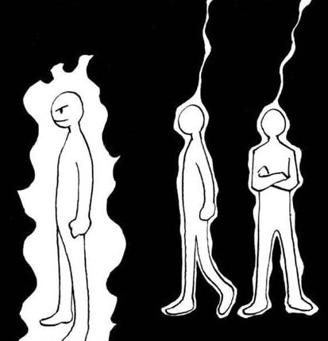
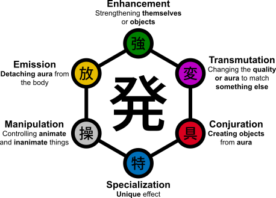
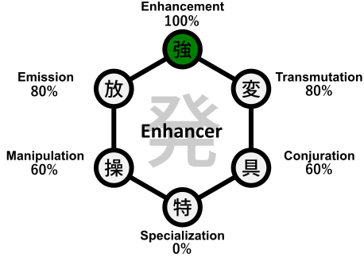
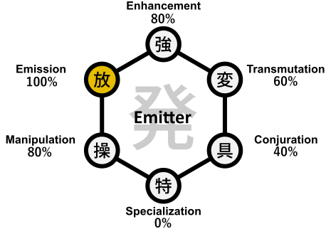
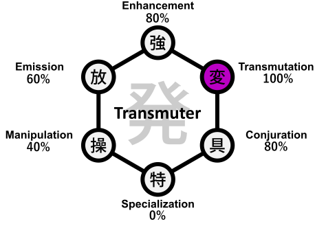
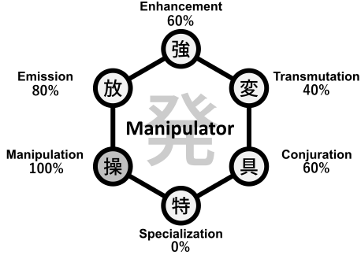
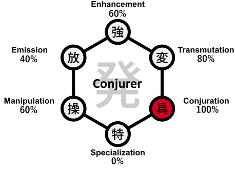
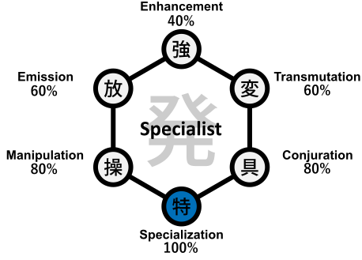

El usuario de Nen
El poder del Nen

Nen se refiere a la técnica de utilizar y manipular la propia energía vital. También se utiliza este término para describir el aura de una persona. Los usuarios del Nen son aquellos que han despertado la habilidad de sentir esta fuente de energía invisible. Ven y perciben más del mundo, además de potenciar sus propias habilidades canalizando su energía vital. El poder que otorga el Nen es el mismo para todos los usuarios, pero la forma de utilizarlo y manipularlo depende de la personalidad y las experiencias únicas de cada persona. No hay dos usuarios de Nen iguales. El poder de un Nen potencia sus habilidades naturales y también puede otorgar habilidades sobrenaturales. A menudo, esto hace que un usuario de Nen sea potencialmente peligroso. Se dice que si dos usuarios de Nen luchan, es muy probable que uno de ellos, o ambos, acaben muriendo. Sin embargo, la muerte no significa necesariamente el fin del Nen o de su usuario. Si se dan las condiciones y motivaciones adecuadas, el Nen se vuelve mucho más poderoso después de la muerte. En cuanto al usuario, el potencial casi infinito de lo que el Nen puede lograr significa que volver de la muerte, o evitarla, es totalmente posible.
El origen de un usuario de Nen
El Nen nace con un ser vivo. La esencia del alma se filtra del cuerpo mientras vive. No se sabe cómo se descubrió, pero muchos creen que los primeros usuarios del Nen fueron aquellos que buscaban la iluminación y supieron de su existencia a través de la introspección y la meditación. Hoy en día, quienes abren su mente y su ser a más de lo que revelan sus sentidos, descubren en sí mismos el potencial inexplorado para llegar a ser más. Muy pocos nacen naturalmente sintonizados y despiertos al aura que ellos y los demás emiten. Algunos, sin embargo, son despertados al Nen de forma forzada, a menudo dolorosa. Cuando se encuentran con un Usuario del Nen y experimentan en carne propia el poder de otro a través de su cuerpo, su propia fuerza vital retrocede y su comprensión del Nen explota con ella.
La energía interna
Mientras que los fieles obtienen sus poderes de sus dioses, y los hechiceros aprovechan el poder del Plano de la Magia, un Usuario de Nen desprecia esto por considerarlo débil y dependiente. Incluso los monjes, que tradicionalmente se considera que obtienen su poder a través de la superación personal, en realidad sólo aprenden a aprovechar la energía que inunda el multiverso, conocida como ki. Los usuarios de Nen, en cambio, acumulan energía en su interior a través de un entrenamiento riguroso, igual que un guerrero fortalece sus músculos. Aprenden a dar forma a esta energía y a utilizarla para lograr sus objetivos. Esta energía puede utilizarse de diversas formas, desde mejorar las propias habilidades físicas hasta manipular a los demás e incluso invocar criaturas hechas enteramente de Nen. A lo largo de este manual, el término «Nen» se utilizará para referirse al aura, la energía vital, la esencia vital, el poder y el espíritu de una persona.
Expresión del alma
Quienes aprenden los secretos del Nen deben estar preparados para tomar varias decisiones: tanto en la creación del personaje como en el fragor de la batalla. Al fin y al cabo, dado que todo lo que hace un Usuario Nen se alimenta de su Nen, un recurso limitado, tomar buenas decisiones es clave para interpretar a un Usuario Nen eficaz. El manual de "Usuario del Nen" está pensado inicialmente como un anexo a cualquier clase de DnD 5e. Esto significa que más que una clase tradicional, es una disciplina adicional que cualquier persona puede adquirir paralelamente a su clase base. Esto a su vez significa que la tabla de progresión del Usuario Nen es totalmente independiente de las clases de DnD 5e. El usuario Nen no tiene progresión de HP, atributos, dotes de clase base o rasgos de clase estándar. En su lugar, el usuario de Nen aumenta su cantidad de aura, aprende y mejora habilidades Nen. Por lo tanto, una persona (o personaje) no entrenada en ninguna clase podría ser un usuario de Nen avanzado, pero no contar con ningún beneficio de alguna clase base. De la misma forma, un personaje de nivel alto podría no tener conocimiento del Nen en absoluto. Todo esto depende de la construcción del mundo, del entrenamiento de las personas/personajes, y de cuánto se sumerjan en el mundo del manejo del aura.
Rasgos de Clase
Progresión del Usuario de Nen
| Nivel | XP | Rasgo de Clase |
|---|---|---|
| 1st | ---- | Técnica básica, Aura I, Liberar Aura (d6) |
| 2nd | 100 | Saber Nen |
| 3rd | 210 | Meditación (1/día) |
| 4th | 330 | Saber Nen Avanzado I |
| 5th | 460 | Aura II |
| 6th | 600 | Aura Fuerte (d8) |
| 7th | 750 | Eficiencia de Aura (1/día) |
| 8th | 910 | Saber Nen Avanzado II |
| 9th | 1080 | Aura III |
| 10th | 1260 | Instancia Nen mejorada (1 técnica) |
| 11th | 1450 | Aura poderosa (d10) |
| 12th | 1650 | Meditación (2/día), Saber Nen Avanzado III |
| 13th | 1860 | Aura IV |
| 14th | 2080 | Meditación mejorada |
| 15th | 2310 | Instancia Nen mejorada (2 técnicas) |
| 16th | 2550 | Aura devastadora (d12), Saber Nen Avanzado IV |
| 17th | 2800 | Aura V |
| 18th | 3060 | Poder de Aura Mejorado |
| 19th | 3330 | Eficiencia de Aura (2/día) |
| 20th | 3610 | Adepto del Nen |
El despertar
En el 1er nivel, el Usuario de Nen despierta su Nen mediante el conocimiento de su primera técnica Nen. Para ello, el Usuario Nen debe elegir una de las 4 técnicas básicas: Ten, Ren, Zetsu o Hatsu (ver Técnicas básicas), lo que muestra que su camino en la manipulación del aura ha comenzado. Esto significa que es capaz de utilizar la técnica seleccionada en nivel 1 (con 1 Instancia Nen). Cada una de las técnicas básicas debe mejorarse mediante entrenamiento específico, lo que significa experiencia independiente al nivel de Usuario de Nen. El mejorar una habilidad específica permitirá aumentar las instancias de Nen máximas que se pueden utilizar con dicha técnica (ver tabla Técnicas básicas).
Aura I - II - III - IV - V
Comenzando en el 1er nivel, comienzas a despertar los Nodos de Aura de tu cuerpo, desde los cuales se produce la energía vital de todos los seres vivos (しょうこう, Shōkō). Controlar los Nodos de Aura es el primer paso para volverse un Usuario de Nen. A nivel 1, ganas una cantidad de Aura equivalente al doble de la suma de modificadores positivos de todos tus atributos. Esto se repite nuevamente en los niveles 5, 9, 13 y 17. En el resto de los niveles ganas aura equivalente a la suma de modificadores positivos de todos tus atributos. Puedes utilizar estos puntos para alimentar varias técnicas de Nen. Los usos básicos del Aura incluyen:
- Regla Fundamental de Costo de Aura (1 × Instancia × Nivel de Dado): En tu turno, puedes utilizar una Acción Bonus para activar una técnica Nen que utilice Instancias de Nen. El costo base de Aura se calcula como
Cantidad de Instancias (Dados) × Nivel de Dado, donde d6 = 1, d8 = 2, d10 = 3 y d12 = 4:- Con d6 (Nivel 1+): 1d6 cuesta 1 de Aura | 2d6 cuestan 2 de Aura | 3d6 cuestan 3 de Aura | 4d6 cuestan 4 de Aura.
- Con d8 (Nivel 6+): 1d8 cuesta 2 de Aura | 2d8 cuestan 4 de Aura | 3d8 cuestan 6 de Aura | 4d8 cuestan 8 de Aura.
- Con d10 (Nivel 11+): 1d10 cuesta 3 de Aura | 2d10 cuestan 6 de Aura | 3d10 cuestan 9 de Aura | 4d10 cuestan 12 de Aura.
- Con d12 (Nivel 16+): 1d12 cuesta 4 de Aura | 2d12 cuestan 8 de Aura | 3d12 cuestan 12 de Aura | 4d12 cuestan 16 de Aura.
- Si el Usuario de Nen puede usar más de 1 Instancia de Nen en una técnica en particular, puede aplicar todas las Instancias que desee durante la misma acción, gastando el aura correspondiente (todos los dados de una misma activación deben ser del mismo tamaño).
- Utilizar una mayor cantidad de Aura para activar de forma más eficiente (en términos de economía de acción) una técnica de Nen, multiplicando el costo base según la siguiente tabla:
Técnicas básicas
Acción Multiplicador de Aura Bonus x1 Free (en tu turno) x2 Reacción x3 Free (no en tu turno) x4 Técnicas intermedias
Acción Multiplicador de Aura Bonus x1 Free (en tu turno) x3 Reacción x4 Free (no en tu turno) x5 Nota: Usuarios más experimentados tienen un control tan avanzado del flujo de su aura que son capaces de movilizarla en fracciones de segundo (ver Dotes y Técnicas avanzadas).Técnicas avanzadas
Acción Multiplicador de Aura Bonus x1 Free (en tu turno) x4 Reacción x5 Free (no en tu turno) x6 - Recuperas todos tus puntos de Aura luego de finalizar un descanso largo.
-
Recuperación en Descanso Corto: Al finalizar un descanso corto, puedes recuperar una cantidad de Puntos de Aura equivalente a
Tu nivel de Usuario de Nen + (2 × la suma de modificadores positivos de todos tus atributos). Una vez que has usado este rasgo, no puedes volver a utilizarlo hasta finalizar un descanso largo. Adicionalmente, durante cualquier descanso corto puedes elegir gastar Dados de Golpe para recuperar1 Dado de Nen + tu modificador de Atributo Nenen Puntos de Aura por cada Dado de Golpe invertido. -
Cuando vas subiendo de nivel como Usuario de Nen, aprenderás diferentes técnicas que requieren tiradas de dados contra algún objetivo. Estas tiradas se calculan como:
- Modificador de ataque Nen: Bono de Competencia (Proficiency) + Modificador de Atributo Nen
- CD de salvación Nen: 8 + Bono de Competencia (Proficiency) + Modificador de Atributo Nen
Liberar Aura (d6)
El Usuario de Nen podrá elegir liberar su aura para alimentar las técnicas que conozca. En nivel 1, cada Instancia de Nen liberada cuesta 1 punto de Aura y se traduce en 1d6. Los efectos producidos dependerán de la técnica a la cual se haya alimentado con dicha aura.
Saber Nen
En el 2do nivel, tu conocimiento y estudio del Nen te permite adquirir una nueva habilidad llamada Saber Nen (Atributo Nen), la cual refleja el conocimiento teórico y práctico que tienes sobre esta disciplina. Saber Nen es una habilidad en la que posees competencia (entrenada).
Meditación
Comenzando en el 3er nivel, puedes meditar durante 30 minutos para concentrarte en tu interior (1/día en nivel 3; 2/día en nivel 12). Al hacerlo, puedes elegir que dicha meditación te otorgue uno de los siguientes beneficios:
- Tras la meditación, ganas un bonificador de +2 a una puntuación de atributo a tu elección durante 24 horas (esto no aumenta tu pool máximo de aura). Sólo puedes usar esta opción una vez por descanso largo.
- Recuperas una cantidad de Aura equivalente a 3 × la suma de los modificadores positivos de todos tus atributos (sin superar tu máximo de Aura).
- Puedes sumar tu bono de competencia (proficiency) adicionalmente a todas tus tiradas de Saber Nen durante 24 horas (incluso si ya posees expertise). Sólo puedes usar esta opción una vez por descanso largo.
- Puedes lanzar 1d20 y anotar su resultado. Durante las siguientes 24 horas, puedes utilizar ese resultado para reemplazar cualquier tirada de d20 que realices tú o una criatura que puedas ver a 30 pies. Sólo puedes usar esta opción una vez por descanso largo.
Saber Nen Avanzado I - II - III - IV
A medida que progresa con su entrenamiento en el Nen, el Usuario Nen comprende que hay diversas aristas en esta disciplina. A partir del Nivel 4, el Usuario de Nen mejora su conocimiento general del Nen o un área específica de este conocimiento. Debe elegir uno de los siguientes rasgos:
- Conocimiento Nen General: Ganas +1 a TODAS las tiradas de Saber Nen.
- Rituales de Nen: Un conocimiento poco común. Ganas +3 a tiradas relacionadas con rituales, condiciones y votos de Nen.
- Escritura de Nen: Algo similar a un lenguaje místico. Ganas +3 a tiradas relacionadas con comprender y trazar el efecto de escrituras e inscripciones de Nen.
-
Habilidades Hatsu: Has estudiado en profundidad el alcance de las habilidades Hatsu. Ganas +3 a tiradas relacionadas con analizar habilidades Hatsu.
Nota: Esto no revela automáticamente el nombre o funcionamiento exacto de un Hatsu enemigo con una simple tirada, pero sí te permite deducir qué afinidades podrían generar cierto efecto o qué condiciones son teóricamente posibles con Nen. - Estudio específico: 1/día tienes ventaja en una tirada de Saber Nen.
En los niveles 8, 12 y 16 puedes volver a elegir uno de los rasgos. Todos los rasgos pueden elegirse más de una vez (sus bonos se acumulan).
Eficiencia de Aura
A partir del nivel 7, el Usuario Nen ha entrenado lo suficiente para aumentar su eficiencia en un momento crítico. Una vez al día, al activar cualquier técnica o habilidad de Nen, puedes reducir a la mitad (redondeando hacia abajo, mínimo 1) el costo total de Aura de dicha activación (incluyendo multiplicadores de acción y tamaño de dado). En el nivel 19, puedes utilizar este rasgo dos veces por día.
Aura Fuerte (d8) / Aura Poderosa (d10) / Aura Devastadora (d12)
El efecto que tiene el aura de un Usuario de Nen depende completamente de su habilidad para condensarla y liberarla:
- Nivel 6 - Aura Fuerte (d8): Puedes elegir gastar 2 puntos de Aura por instancia (en lugar de 1) para lanzar dados d8 en lugar de d6.
- Nivel 11 - Aura Poderosa (d10): Puedes elegir gastar 3 puntos de Aura por instancia para lanzar dados d10 en lugar de d6.
- Nivel 16 - Aura Devastadora (d12): Puedes elegir gastar 4 puntos de Aura por instancia para lanzar dados d12 en lugar de d6.
Si utilizas más de una Instancia de Nen en una misma activación, debes aplicar el mismo tamaño de dado y costo de aura a todas las instancias de esa técnica (por ejemplo, activar 4 instancias con d12 cuesta 4 × 4 = 16 puntos de Aura).
Instancia de Nen Mejorada
Cuando alcanzas el nivel 10, tu conocimiento de una técnica Nen es tal que mejora tu capacidad para liberar Aura en cualquier momento.
Ganas +1 a tus Instancias de Nen máximas para una técnica que elijas (superando incluso el límite normal de 4 instancias de nivel 5).
En el nivel 15 vuelves a ganar este rasgo, pudiendo elegir una segunda técnica distinta para otorgarle +1 a sus Instancias de Nen máximas.
Meditación Mejorada
En el nivel 14, tu comunión con el flujo de tu energía vital alcanza una calma perfecta. El tiempo requerido para completar tu Meditación se reduce de 30 minutos a 10 minutos (además, una vez por descanso largo puedes gastar uno de tus usos de Meditación como 1 Acción en medio del combate). Cuando meditas, puedes elegir dos beneficios de la lista simultáneamente en lugar de uno, y sus efectos se potencian: el bonificador temporal a un atributo aumenta a +4 durante 24 horas, la recuperación de Aura sube a 6 × la suma de tus modificadores positivos, y al elegir la premonición de d20 puedes lanzar 2d20 y guardar ambos resultados para reemplazar tiradas durante el día.
Poder de Aura Mejorado
A nivel 18, tu conocimiento del flujo del aura es tal que puedes hacer que cada lanzamiento de aura tenga una densidad superior.
Obtienes un bonificador gratuito de +1 al resultado de cada dado lanzado por tus Instancias de Nen (por ejemplo, si utilizas 4 instancias con d12, lanzas 4d12 + 4 sin costo adicional de aura).
Adepto del Nen
Super secreto!!
Técnicas Nen
A medida que progrese su entrenamiento, el Usuario de Nen podrá desarrollar técnicas cada vez más avanzadas. Luego de aprender su primera técnica básica, el usuario Nen podrá desarrollar nuevas técnicas básicas (ver Técnicas básicas), o que requieran mayor habilidad, llamadas técnicas intermedias y avanzadas (ver Técnicas avanzadas). Para aprender nuevas técnicas el usuario debe contar con un maestro o desarrollarlas a través de mucha dedicación, estudio y meditación. No es posible aprender técnicas intermedias o avanzadas sin contar con los prerrequisitos indicados en cada una.
| Técnicas Básicas | Técnicas Intermedias | Técnicas Avanzadas |
|---|---|---|
| Ten | Shu (Ten) | Ko (Ren + Ten) |
| Ren | Gyo (Ren) | Ken (Ten + Ren) |
| Zetsu | In (Zetsu) | Ryu (Ko + Ken) |
| Hatsu | En (Ten + Ren) | Naru (Become - In) |
| Han (Counter - Ten/Ren) | Shea (Compartir - Shu) | |
| Utsu (Golpear - Ren/Zetsu) | Envolve (Han + En) |
Uso activo y pasivo
Todas las técnicas Nen requieren un mínimo de 1 punto de aura para activarse. El tiempo que se mantiene activa dicha técnica dependerá tanto de las características de la técnica como del grado de estrés al que se enfrente el Usuario de Nen. En un escenario totalmente calmado (fuera de combate), una técnica podría mantenerse activa hasta un máximo de 1 minuto por cada uso de aura, mientras que en un escenario hostil (como un combate), la misma técnica se disipará luego de 1 ronda (6 segundos) al inicio de tu siguiente turno, a menos que vuelvas a pagar su costo de mantenimiento o cuentes con el dote Flujo Constante.
Aprender y mejorar técnicas
Técnicas básicas
| Nivel | XP | Instancias | Extra |
|---|---|---|---|
| 1st | 250 | 1 | - |
| 2nd | 750 | 2 | - |
| 3rd | 1500 | 2 | Technique feat |
| 4th | 2500 | 3 | - |
| 5th | 3750 | 4 | - |
Técnicas Intermedias
| Nivel | XP | Instancias | Extra |
|---|---|---|---|
| 1st | 300 | 1 | - |
| 2nd | 850 | 2 | - |
| 3rd | 1650 | 2 | Technique feat |
| 4th | 2700 | 3 | - |
| 5th | 4000 | 4 | - |
Técnicas Avanzadas
| Nivel | XP | Instancias | Extra |
|---|---|---|---|
| 1st | 350 | 1 | - |
| 2nd | 950 | 2 | - |
| 3rd | 1800 | 2 | Technique feat |
| 4th | 2900 | 3 | - |
| 5th | 4250 | 4 | - |
Aprendizaje y entrenamiento
Para comprender plenamente el Nen, primero hay que aprender los Cuatro Principios Mayores. Todo lo demás, incluyendo las habilidades individuales de un Usuario de Nen, se basa en las manipulaciones básicas del propio flujo del aura. Los Cuatro Principios Mayores, en orden de estudio, son: Ten, Zetsu, Ren y Hatsu. Estas técnicas básicas se convierten en algo natural para aquellos que tienen experiencia en el Nen.
A través de un entrenamiento intenso (lo cual puede también incluir experiencias extremas), el Usuario de Nen adquiere la comprensión y control suficientes para aprender las técnicas básicas. Todas estas técnicas deben aprenderse mediante estudio, entrenamiento y/o meditación. A su vez, mejorar cada una de estas técnicas requiere un entrenamiento específico. Por lo tanto, cada habilidad tiene una tabla de progresión separada, tanto de las otras técnicas básicas como de la tabla de Usuario de Nen. Al alcanzar el Nivel 3 en cualquier técnica (Básica, Intermedia o Avanzada), el usuario obtiene un Dote de Técnica (Technique Feat) de Poder 1 gratuito asociado a dicha técnica (siempre que cumpla sus prerrequisitos).
Cuando ganas niveles en una técnica ganas la habilidad de liberar más Instancias de Nen para dicha técnica particular, lo cual se traduce en la capacidad de invertir una mayor cantidad de dados de aura simultáneamente. El tamaño del dado que puedes liberar por cada instancia está determinado por tu nivel de Usuario de Nen (d6, d8, d10 o d12).
Ejemplo de gasto de Aura (`Costo = Instancias × Nivel de Dado`): Si un Usuario de Nen decide usar 3 instancias en una técnica específica, gastará 3 puntos de Aura para lanzar 3d6 (1 por dado). Si tiene el nivel suficiente de Usuario de Nen, puede elegir transformar todos sus dados a d8, d10 o d12: para lanzar 3d8 gastará 6 de Aura (3×2), para 3d10 gastará 9 de Aura (3×3) y para 3d12 gastará 12 de Aura (3×4). Con 4 instancias en d12 (4d12), gastará 16 de Aura (4×4).
Técnicas básicas
Ten (纏テン; "Envolver"/"Cubrir")
Ten es el proceso de mantener los nodos Shōkō abiertos, pero también de hacer que el aura fluya a través y alrededor del cuerpo en lugar de alejarse de él. Al hacerlo, se crea una envoltura protectora que se siente similar a un líquido viscoso y tibio que recubre el cuerpo. Mientras Ten está activo (lo cual requiere que no lleves armadura ni escudo, a menos que poseas los dotes de Manejo de Ten Avanzado), obtienes los siguientes beneficios:
- Ganas ventaja en las tiradas de salvación de CON contra el cansancio (Exhaustion) y condiciones ambientales extremas.
-
Defensa Base y Bono de Densidad de Aura a la CA: Mientras no lleves armadura, puedes elegir calcular tu CA base como
10 + Modificador de Atributo Nen + Modificador de DEX (máximo +2), o bien mantener tu cálculo habitual de CA (como Defensa sin Armadura). Adicionalmente, para cualquier usuario (use Destreza, Fuerza o armaduras permitidas por dotes), mientras Ten esté activo ganas un bonificador directo a tu CA igual a+1 por cada Instancia de Ten activa(de +1 a +4 según las instancias invertidas, o más si usas Ken). - Escudo de Aura (AHP): Como parte de la acción de activación de Ten, lanzas tus dados de Instancias de Nen y ganas ese resultado como un escudo llamado HP Temporal de Aura (AHP), el cual dura mientras Ten permanezca activo en la ronda.
-
Regla del Escudo Intacto (Interacción Nen vs. Mundano en Mesa): Tu AHP te protege automáticamente de todo daño recibido sin necesidad de declararlo golpe por golpe, siguiendo dos leyes fundamentales:
- Contra ataques y efectos SIN el keyword Nen (daño mundano o magia sin Nen): Tu manto de aura es casi impenetrable para lo mundano. Tienes Resistencia (recibes la mitad del daño) MIENTRAS tu AHP sea mayor a 0 (es decir, cada 1 punto de AHP frena 2 puntos de daño no-Nen). Sin embargo, en el instante en que un golpe reduce tu AHP a 0, el escudo de Ten se rompe por el impacto y el daño sobrante de ese ataque (así como cualquier ataque posterior mientras sigas en 0 AHP) entra completo sin Resistencia. (Esto impide que gastar solo 1 punto de Aura baste para resistir ataques masivos toda la ronda).
- Contra ataques y efectos CON el keyword Nen: El daño choca aura contra aura y se descuenta 1 a 1 de tu AHP (sin otorgar resistencia). Si recibes un ataque con keyword Nen cuando no tienes AHP activo (0 AHP), tu cuerpo desprotegido es Vulnerable (recibe el doble de daño) a los dados de Nen de dicho ataque.
- El AHP sobrante se disipa cuando Ten se desactiva al final de la ronda, incluso si no fue consumido.
- Mientras Ten está activo y te quede al menos 1 punto de AHP, eres inmune a los efectos de miedo generados por la Sed de Sangre de Ren.
Ren (練レン; "Refinar"/"Mejorar")
Ren es la habilidad de concentrar y hacer explotar una mayor cantidad de aura como salida ofensiva. Puedes activar Ren para obtener los siguientes beneficios mientras estés desarmado o empuñando armas simples cuerpo a cuerpo, y no lleves armadura ni empuñes un escudo (puedes desbloquear armas marciales, a distancia o conjuros mediante los dotes de Manejo de Ren Avanzado y Manejo de Ren Mágico):
- Mientras Ren esté activo, puedes usar tu Atributo Nen en lugar de FUE o DEX para las tiradas de ataque y daño de tus golpes sin armas y armas permitidas por Ren.
- Mientras Ren esté activo, el dado de daño base de tus ataques sin armas pasa a ser 1d6. Adicionalmente, cuando usas la acción de Ataque con un golpe sin armas o un arma permitida por Ren en tu turno, puedes realizar un ataque adicional como parte de la misma acción (solo un ataque adicional por turno por este rasgo).
- Pool de Daño de Aura: Como parte de la acción de activación de Ren, lanzas tus dados de Instancias de Nen y obtienes un Pool de Daño de Aura igual al resultado obtenido.
- Debes declarar que añadirás tu Daño de Aura a un ataque antes de realizar tu tirada de ataque (a menos que poseas el dote Ren Mejorado 1). Si posees varios ataques, puedes elegir en cuál de ellos descargarás tu Daño de Aura. Si ese ataque falla, el Daño de Aura se pierde con dicho ataque.
- Al realizar un ataque que incluya Daño de Aura (o mientras mantengas Ren activo mediante Ren Mejorado 2), tus ataques ganan el keyword Nen.
- El Daño de Aura no utilizado se disipa al desactivar Ren al final de la ronda.
- Sed de Sangre (Intimidación Espiritual): Como 1 Acción, puedes proyectar una hostilidad aplastante usando tu Ren. Elige cualquier número de objetivos en un radio de 30 pies que puedan verte o sentir tu aura, y gasta 1 Punto de Aura por cada objetivo. Los objetivos deben tener éxito en una tirada de salvación de Sabiduría contra tu CD de salvación de Nen o quedar Asustados (Frightened) de ti durante 1 minuto. Si la tirada de salvación falla por 5 o más, el objetivo también queda Aturdido (Stunned) hasta el final de tu siguiente turno. Los objetivos pueden repetir la tirada de salvación al final de cada uno de sus turnos, terminando el efecto con un éxito. Una criatura que tenga éxito en esta tirada de salvación (o que mantenga Ten activo con AHP mayor a 0) es inmune a tu Sed de Sangre durante las siguientes 24 horas.
Zetsu (絶ゼツ; "Suprimir"/"Anular")
Zetsu detiene por completo el flujo externo del aura cerrando los nodos Shōkō, conteniendo y comprimiendo la energía vital en el interior del cuerpo. Esto borra por completo la presencia del usuario ante la percepción normal y extrasensorial, además de acelerar la recuperación interna y preparar emboscadas letales. Sin embargo, mientras Zetsu está activo, el usuario no tiene aura externa protegiendo su piel: si recibes daño mientras estás en Zetsu, cada dado de daño del ataque enemigo se maximiza automáticamente.
-
Reglas de Activación y Salida (Equilibrio Táctico):
- Si no tienes ninguna técnica o habilidad Nen activa, puedes activar Zetsu como Acción Bonus (invirtiendo tus Instancias de Zetsu hacia tu interior según la regla
Instancias × Dado). - Si tienes activa cualquier técnica o habilidad Nen (como Ten o Ren), cerrar tus nodos de golpe requiere concentración: activar Zetsu cuesta 1 Acción completa, y no puedes activar Zetsu en el mismo turno en que ya hayas realizado un ataque o lanzado un conjuro ofensivo. Activar Zetsu termina inmediatamente cualquier otra técnica Nen activa.
- Salir de Zetsu durante tu turno es Gratis (Free Action) (por ejemplo, justo al momento de impactar una emboscada), pero una vez que sales de Zetsu o realizas un ataque, tus nodos quedan abiertos y NO puedes volver a activar Zetsu hasta tu siguiente turno.
- Si no tienes ninguna técnica o habilidad Nen activa, puedes activar Zetsu como Acción Bonus (invirtiendo tus Instancias de Zetsu hacia tu interior según la regla
-
El Pool de Vacío (Uso de las Instancias y Dados de Zetsu): Al activar Zetsu, lanzas tantos dados de Nen como Instancias de Zetsu inviertas. El resultado obtenido conforma tu Pool de Vacío para esa ronda, el cual te otorga tres beneficios tácticos:
- Velo Fantasma y Ocultarse a Plena Vista (Defensivo / Sigilo):
- Mientras Zetsu está activo, puedes sumar tu Atributo Nen a tus tiradas de Sigilo (Stealth), ganas competencia en Sigilo (o Expertise si ya eras competente; o sumas el doble de tu nivel de Zetsu si ya tenías Expertise) y eres completamente indetectable para sensores de aura (como En), adivinación o sentidos que no sean vista, oído u olfato directos.
- Al activar Zetsu, puedes intentar Esconderte (Hide) como Free Action incluso a plena vista y sin cobertura, sumando el resultado de tu Pool de Vacío (o tu nivel de Zetsu si no gastaste dados adicionales) a tu tirada de Sigilo contra la Percepción Pasiva de tus enemigos.
- Mientras un enemigo no haya superado tu prueba de Sigilo, tienes Ventaja en tus tiradas de ataque contra él, y él tiene Desventaja en sus ataques contra ti. Además, tu ausencia total de intención te otorga un bono de esquiva a tu CA igual a tus Instancias de Zetsu activas contra ataques de criaturas que no puedan sentirte.
- Golpe Silencioso / Rompe-Ten (Ofensivo al romper Zetsu):
- Cuando atacas a una criatura que no te ha detectado rompiendo tu Zetsu en el instante del impacto, el enemigo no percibe intención asesina ni lectura de aura para defenderse a tiempo.
- Este primer ataque gana el keyword Nen y suma todo tu Pool de Vacío (los dados de Zetsu lanzados) como daño adicional del impacto.
- Efecto Rompe-Defensas: Debido a que golpeas en el punto ciego del aura rival, cada 1 punto de daño de tu Pool de Vacío destruye 2 puntos de AHP del Ten/Ken del objetivo (anulando el truco de defenderse con un Ten mínimo). Además, cualquier dado de tu Pool de Vacío que impacte directamente en el HP del objetivo (una vez roto su AHP o si no tenía Ten) se maximiza automáticamente.
- Absorción Interna (Recuperación en Combate y Descansos):
- Recarga Pasiva en Combate: Si mantienes Zetsu activo durante toda una ronda de combate sin realizar ataques (asumiendo el riesgo de recibir daño maximizado si eres alcanzado), al inicio de tu siguiente turno absorbes tu propio Pool de Vacío y recuperas Puntos de Aura iguales al resultado de tu Pool de Vacío + (Instancias de Zetsu × Modificador de Atributo Nen).
- Second Wind de Aura (Acción Bonus): Mientras estás en Zetsu, puedes usar una Acción Bonus para recuperar inmediatamente una cantidad de Aura igual a
Instancias de Zetsu × (Dado de Nen + Modificador de Atributo Nen). Puedes usar este rasgo tantas veces por descanso largo como tu Nivel de Zetsu. - Mejorar Curación y Descansos:
- Al comenzar el día tras un descanso largo, obtienes Dados de Golpe adicionales equivalentes a tus Instancias de Zetsu (en cantidad y tamaño de tu Dado de Nen).
- Al tomar un descanso corto en Zetsu, sumas tus Instancias de Zetsu a cada Dado de Golpe gastado para curarte, y recuperas Aura adicional equivalente a
Instancias de Zetsu × Suma de tus modificadores positivos. - Al tomar un descanso largo en Zetsu, comienzas el día con Puntos de Aura temporales adicionales equivalentes a
Nivel de Zetsu × Suma de tus modificadores positivos.
- Velo Fantasma y Ocultarse a Plena Vista (Defensivo / Sigilo):
Hatsu (発ハツ; "Liberar"/"Actuar")
El Hatsu es la expresión personal del Nen. Sus cualidades están influidas por la categoría natural de Nen del usuario, una de las seis disponibles, pero no se limitan a ella. El Hatsu se utiliza para proyectar el aura del usuario y llevar a cabo una función determinada, creando una habilidad especial y única que se conoce coloquialmente como Habilidad Nen. Las seis Afinidades del Nen (Intensificación, Transformación, Emisión, Materialización, Control y Especialización) se detallan en sus respectivas secciones más abajo. Dependiendo de tu afinidad por estas seis disciplinas, podrás desarrollar técnicas de Hatsu para las que estés cualificado. A medida que mejore tu dominio del Nen, podrás aumentar el nivel de maestría de tu afinidad principal o desarrollar rasgos asociados a otros estilos cercanos.

- Todo Usuario de Nen tiene un único estilo al que es naturalmente afín: a esto se le llama Afinidad 100%.
- Una afinidad del 100% permite al Usuario de Nen subir de nivel dicho estilo hasta el Nivel 5 (4 Instancias) con el costo estándar de experiencia y sin sobrecosto de Aura, tal como indica la tabla de Progresión de Técnicas Básicas.
- El resto de las afinidades (80% adyacentes, 60% a dos pasos y 40% opuesta) pueden aprenderse y entrenarse según la tabla de "Comparación de Afinidades Hatsu" más abajo.
- El porcentaje de afinidad determina tanto el nivel máximo alcanzable en esa categoría (Nivel 4 para 80%, Nivel 3 para 60% y Nivel 2 para 40%) como el costo de XP para desbloquear cada nivel (que equivale a los tramos más altos de entrenamiento).
- De la misma forma, como el Usuario de Nen es menos eficiente con las categorías alejadas de la suya, cada Instancia de Nen utilizada en una afinidad secundaria tiene un sobrecosto adicional de Aura indicado en la columna "Aura" de la tabla (por ejemplo, si usas 2 instancias de una afinidad al 80% en Nivel 2, pagas el costo base de tus dados + 2 de Aura adicionales por cada instancia).
Comparación de Afinidades Hatsu (Escala de 5 Niveles)
100% (Principal)
| Nivel | XP | Sobrecosto Aura/Inst. |
|---|---|---|
| 1st | 250 | +0 |
| 2nd | 750 | +0 |
| 3rd | 1500 | +0 |
| 4th | 2500 | +0 |
| 5th | 3750 | +0 |
80% (Adyacente)
| Nivel | XP | Sobrecosto Aura/Inst. |
|---|---|---|
| 1st | 750 | +3 |
| 2nd | 1500 | +2 |
| 3rd | 2500 | +2 |
| 4th | 3750 | +1 |
| 5th | -- | -- |
60% (Distante)
| Nivel | XP | Sobrecosto Aura/Inst. |
|---|---|---|
| 1st | 1500 | +3 |
| 2nd | 2500 | +3 |
| 3rd | 3750 | +2 |
| 4th | -- | -- |
| 5th | -- | -- |
40% (Opuesta)
| Nivel | XP | Sobrecosto Aura/Inst. |
|---|---|---|
| 1st | 2500 | +4 |
| 2nd | 3750 | +3 |
| 3rd | -- | -- |
| 4th | -- | -- |
| 5th | -- | -- |
Intensificar (強)

Intensificar es la capacidad de utilizar el aura para fortalecer o aumentar las habilidades naturales de un objeto o del propio cuerpo. Los Intensificadores pueden aumentar enormemente su ataque físico y su defensa, y son los más adecuados para el combate cuerpo a cuerpo. De hecho, la afinidad de cada uno con esta categoría desempeña un papel crucial en el combate en todo momento, incluso cuando no se está utilizando una habilidad Nen compleja. Un Intensificador competente que además cuide bien su cuerpo puede hacerlo mucho más duradero que un tanque y generar la fuerza de un misil con un solo golpe. La Intensificación es también la categoría más equilibrada: permite a los usuarios repartirse equitativamente entre ataque y defensa y volverse muy poderosos usando sólo habilidades simples.
Rasgos de Afinidad
Para activar Intensificación (como Acción Bonus en tu turno, siguiendo la regla Costo = Instancias × Nivel de Dado), cada dado invertido no se lanza al azar, sino que genera un bonificador fijo garantizado según su tamaño:
1d6 = +1 (1 Aura) | 1d8 = +2 (2 Aura) | 1d10 = +3 (3 Aura) | 1d12 = +4 (4 Aura).
El usuario de Intensificación puede distribuir este bonificador total durante la ronda actual entre tres tipos de mejoras:
-
1. Puntuaciones de Atributo: Aumenta temporalmente una o más puntuaciones de atributo. El aumento máximo al modificador de un mismo atributo equivale a tus Instancias de Intensificación.
Ejemplo: Con 4 instancias en d12 (16 de Aura = bono total de +16 a puntuaciones), puedes otorgarte +8 a Fuerza (+4 al modificador) y +8 a Constitución (+4 al modificador) durante esa ronda. -
2. Habilidades (Skills): Otorga un bonificador directo a tus pruebas de Habilidad. El bonificador máximo a una misma habilidad equivale al doble de tus Instancias de Intensificación.
Ejemplo: Con 4 instancias en d12 (+16 total), puedes darte un bono de +8 a dos habilidades distintas (como Atletismo y Acrobacias). - 3. Potenciar Técnicas Básicas: Puedes invertir tus Instancias de Intensificación para sumar dados adicionales directamente a una técnica básica activa (Ten, Ren o Zetsu) durante la ronda actual, pagando el costo de Aura correspondiente.
Emitir (放)
Una afinidad por la Emisión significa que el Usuario tiene mayor facilidad para separar su aura de su cuerpo y mantener su cohesión a distancia. Debido a sus propiedades, la Emisión se emplea típicamente en habilidades con énfasis en el alcance, proyectiles de energía pura y efectos remotos o duraderos. El aura suele disminuir de intensidad muy rápidamente cuando abandona el cuerpo fuente, pero los Emisores adeptos pueden separar su aura de su cuerpo durante largos periodos de tiempo, a grandes distancias, y seguir manteniendo sus funciones ofensivas o de utilidad (incluyendo propulsión o teletransportación avanzada).

Rasgos de Afinidad
- Ren a Distancia: Puedes aplicar Ren sobre armas a distancia simples y trucos (cantrips) de ataque, utilizando hasta tantas instancias de Ren como tu Nivel de Emisión (para armas marciales a distancia o conjuros de nivel 1+, consulta los dotes de Manejo de Ren Avanzado y Manejo de Ren Mágico).
-
Extensión de Alcance: Como Acción Bonus, puedes invertir Instancias de Emisión (pagando
Instancias × Nivel de Dado) para aumentar el alcance de tus ataques cuerpo a cuerpo (reach), armas arrojadizas/de rango o conjuros durante la ronda actual:- Cada Instancia de Emisión invertida aumenta el alcance en +5 pies (Melee) / +10 pies (Rango Corto) / +20 pies (Rango Largo), hasta el límite indicado en la tabla según tu Nivel de Emisión.
- Al hacerlo, los ataques o conjuros beneficiados ganan el keyword Nen.
-
Desprender Aura (Proyectil de Nen): Puedes disparar esferas o haces de aura pura desde tu cuerpo como 1 Acción (realizando una tirada de ataque de Nen a distancia):
- Sin costo de Aura (Versión básica): Realizas un ataque con alcance de 30 pies que inflige 1d6 de daño contundente por cada Instancia de Emisión que poseas (de 1d6 en nivel 1 a 4d6 en nivel 5).
- Invirtiendo Aura (Versión potenciada): Si inviertes Aura según la regla
Instancias × Nivel de Dado(por ejemplo, 4d12 por 16 de Aura), el ataque gana el keyword Nen, escala al tamaño de tu Dado de Nen actual y su alcance pasa a ser 30 pies (corto) / 120 pies (largo) (pudiendo ampliarse aún más con Extensión de Alcance). - Este ataque puede ser potenciado simultáneamente con Ren.
| Nivel | Instancias / Daño Base | Aumento Máx. de Rango (Melee / Corto / Largo) |
|---|---|---|
| 1st | 1 (1d6) | +5' / +10' / +20' |
| 2nd | 2 (2d6) | +10' / +20' / +40' |
| 3rd | 2 (2d6) + Feat | +15' / +30' / +60' |
| 4th | 3 (3d6) | +20' / +40' / +80' |
| 5th | 4 (4d6) | +25' / +50' / +100' |
Transformar (変)

La afinidad por la Transformación significa que una persona puede cambiar las propiedades físicas y químicas de su aura para imitar otra sustancia o replicar atributos específicos (como el fuego, el frío, la electricidad, la elasticidad de la goma, el filo de una cuchilla o toxinas). Al igual que la Emisión, las construcciones creadas mediante la Transformación son aura pura (invisibles para quienes no han despertado al Nen, a menos que usen Gyo en los ojos). La diferencia con la Materialización es que la Transformación hace que el aura imite las propiedades de una sustancia mientras permanece unida al cuerpo del usuario, mientras que la Materialización convierte el aura en un objeto físico real e independiente.
Rasgos de Afinidad
-
Propiedad Elemental / Sustancia (Keyword): El Transformador elige qué propiedad o elemento imita su aura. Al activar Transformación (pagando
Instancias × Nivel de Dado), puede generar un volumen de dicha sustancia en litros o pies cúbicos equivalente al resultado de sus dados de Nen (por ejemplo, si obtiene 18 en sus dados, moldea hasta 18 litros de su sustancia). -
Emulación de Conjuros con Aura: En términos mecánicos, el Transformador puede usar su aura transmutada de forma ofensiva, defensiva o de utilidad emulando los efectos de conjuros de DnD 5e que sean coherentes con la sustancia de su aura (por ejemplo, Escudo de Fuego, Manos Ardientes, Telaraña, Paso Brumoso o Relámpago), con las siguientes reglas:
- El nivel máximo de conjuro que puedes emular es igual a tu Nivel de Transformación minus 1 (en nivel 1 emulas Trucos y Nivel 1; hasta Nivel 4 de conjuro en Nivel 5 de Transformación, según la tabla adjunta).
- La cantidad de efectos/conjuros distintos que has moldeado y conoces está determinada por la tabla de Transformación.
- Para lanzar un conjuro emulado, inviertes una cantidad de Instancias de Transformación igual al Nivel del Conjuro (mínimo 1 instancia para Trucos y conjuros de Nivel 1), pagando el Aura según tu dado actual (
Instancias × Nivel de Dado). Todo conjuro emulado de esta forma posee automáticamente el keyword Nen y utiliza tu Modificador de Ataque Nen y CD de Salvación Nen. - Salvo que se combine con Emisión, el efecto del conjuro emulado debe originarse en ti o permanecer conectado a tu aura (alcance personal, toque o áreas que nazcan desde tu posición).
- Riesgo de Retroceso Elemental: Transformar tu aura en un elemento peligroso (como fuego, ácido o explosiones) NO te otorga inmunidad automática a dicho elemento: debes proteger tu piel manteniendo Ten o Ken activo (descontando del AHP el retroceso si te envuelves en una explosión sin protección).
| Nivel | Lvl 0 | Lvl 1 | Lvl 2 | Lvl 3 | Lvl 4 |
|---|---|---|---|---|---|
| 1st | 1 | 1 | 0 | 0 | 0 |
| 2nd | 1 | 2 | 1 | 0 | 0 |
| 3rd | 1 | 2 | 2 | 1 | 0 |
| 4th | 2 | 2 | 2 | 2 | 0 |
| 5th | 2 | 3 | 2 | 2 | 1 |
Controlar (操)
Las habilidades pertenecientes a Control permiten al usuario manipular seres vivos o no vivos, incluidos los constructos de aura. La principal ventaja de esta categoría en combate es la capacidad de subyugar el cuerpo o la mente del propio enemigo: las batallas contra un Controlador suelen decidirse en el instante en que logra cumplir su condición de contacto. Los Controladores son los usuarios de Nen que pueden verter la mayor cantidad de aura en un objeto o medio específico (como agujas, humo, papel o armas predilectas), el cual emplean como antena o catalizador de sus órdenes.

Rasgos de Afinidad
- Impregnación y Contacto: Para someter a un objetivo vivo o animar un objeto, el Controlador debe primero poner su aura en contacto con el objetivo (mediante un ataque desarmado, un toque o impactando con un objeto/arma imbuida) y utilizar una Acción (o Acción Bonus si ya impactó con un ataque en ese turno) para imponer la condición.
-
Imposición de Condiciones en Combate (Unificado a
Instancias × Dado):- Una vez hecho el contacto, eliges una condición de la tabla de Controlador de un nivel igual o inferior a tu Nivel de Control. El objetivo debe realizar una tirada de salvación contra tu CD de Salvación Nen (FUE/CON para efectos físicos como Slowed, Prone, Blinded, Poisoned; SAB/CAR para efectos mentales como Frightened, Charmed, Dazed, Incapacitated).
- Costo de Aura Base: Debes invertir las Instancias de Nen correspondientes al nivel de la condición (Nivel 1 = 1 instancia; Niveles 2 y 3 = 2 instancias; Nivel 4 = 3 instancias; Nivel 5 = 4 instancias), pagando el Aura según el Nivel de Dado que elijas utilizar (
d6 = 1, d8 = 2, d10 = 3, d12 = 4 por instancia). - Penalizador a la Salvación por Densidad de Dado: Cuanto mayor sea el dado de Aura que inviertas en tus instancias de Control, más difícil será resistir tu orden. Impones un penalizador a la tirada de salvación del objetivo según el dado empleado: d6 (sin penalizador), d8 (-1 a la salvación), d10 (-2 a la salvación), d12 (-3 a la salvación).
Ejemplo: Imponer Dazed (Nivel 4 = 3 instancias) usando dados d6 cuesta3 × 1 = 3 de Aura(sin penalizador a la salvación). Si decides usar tu output máximo con d12, cuesta3 × 4 = 12 de Aurae impone un -3 a la salvación del enemigo. - Duración y Mantenimiento: En los niveles 3, 4 y 5 puedes multiplicar por x2 la duración inicial multiplicando por x2 el costo de Aura invertido. Además, al inicio de tus turnos siguientes puedes pagar nuevamente el costo base de Aura como Acción Bonus para mantener el control activo sin permitirle repetir la salvación (o, si no pagas, el objetivo repite la salvación al final de cada uno de sus turnos).
| Nivel | Instancias | Condición | Dur. Máx. / Pen. Máx. |
|---|---|---|---|
| 1st | 1 | Slowed / Prone | 1 turno / -1 |
| 2nd | 2 | Blinded / Deafened | 1 turno / -2 |
| 3rd | 2 | Frightened / Charmed | x2 turnos / -2 |
| 4th | 3 | Poisoned / Dazed | x2 turnos / -3 |
| 5th | 4 | Incapacitated / Dominated (1 acción) | x2 turnos / -3 |
Materializar (具)

La Materialización implica la creación de un objeto físico, independiente y material a partir del aura del usuario (visible incluso para personas que no conocen el Nen). Aunque un Materializador debe someterse a un intenso entrenamiento de visualización y familiarización sensorial, una vez que domina la estructura de un objeto puede conjurarlo y disiparlo en un instante. Mediante votos, reglas y mayor inversión de aura, los objetos materializados pueden adquirir propiedades mágicas y sobrenaturales extraordinarias.
Rasgos de Afinidad
-
Materializar Objetos Mundanos:
- Para registrar un objeto en tu memoria de aura, debes estudiarlo y manipularlo durante un total de 48 horas a lo largo de 6 días (8 horas diarias). Puedes conocer y mantener materializados simultáneamente un número máximo de objetos mundanos igual a tus Instancias de Materialización.
- Materializar un objeto aprendido requiere 1 Acción (o Acción Libre si posees el dote Forja Instantánea) y gastar el Aura base indicada en las tablas adjuntas según el dado de daño del arma o la CA de la armadura.
- El objeto dura hasta que tomes un descanso largo, quedes inconsciente, decidas disiparlo como Acción Bonus o te quedes sin capacidad de usar Nen. Todo objeto materializado posee automáticamente el keyword Nen.
-
Materializar Objetos Mejorados (Mágicos / Sobrenaturales):
- Una vez que dominas un objeto mundano base y has estudiado un encantamiento o propiedad equivalente, puedes materializarlo como un objeto mejorado de categoría Poco Común (Uncommon / +1), Raro (Rare / +2), Muy Raro (Very Rare / +3) o Legendario (Legendary / +4) (limitado por tus Instancias de Materialización: 1 instancia = +1/Uncommon, 2 = +2/Rare, 3 = +3/Very Rare, 4 = +4/Legendary).
- El objeto materializado no consume espacios de sintonización (attunement) estándar de DnD 5e, pero solo puedes mantener 1 objeto mejorado materializado a la vez.
- El costo de Aura para materializarlo es el costo base del objeto multiplicado por el factor de rareza (x2, x3, x4 o x5).
Ejemplo: Una armadura completa (Plate, CA 18) tiene costo base 4 de Aura. Materializarla como Mithral Plate (Uncommon, x2) cuesta 8 de Aura; como Armor of Resistance (Rare, x3) cuesta 12 de Aura; como Dwarven Plate (Very Rare, x4) cuesta 16 de Aura; y como Plate of Etherealness (Legendary, x5) cuesta 20 de Aura.
| Dado Arma | Aura Base |
|---|---|
| ≤ 1d6 | 1 |
| 1d8 | 2 |
| 1d10 | 3 |
| 1d12 | 4 |
| 2d6 | 5 |
| CA Base Armadura | Aura Base |
|---|---|
| 11 - 12 | 1 |
| 13 - 14 | 2 |
| 15 - 16 | 3 |
| 17 - 18 | 4 |
| Mejora / Rareza | Multiplicador de Aura |
|---|---|
| Uncommon / +1 (Inst. 1) | x2 |
| Rare / +2 (Inst. 2) | x3 |
| Very Rare / +3 (Inst. 3) | x4 |
| Legendary / +4 (Inst. 4) | x5 |
Especialización (特)
La Especialización se define como cualquier habilidad de aura que no pertenece a ninguna de las otras cinco categorías del hexágono, lo que la convierte en el linaje más extraño, conceptual e impredecible del Nen. A diferencia de un Intensificador o un Emisor, un Especialista no busca simplemente golpear más fuerte o lanzar proyectiles de energía: sus habilidades operan alterando las reglas del propio Hatsu, interactuando con la información, la memoria, el destino, los votos sagrados o el vínculo entre almas. La Especialización es todo o nada: no puede aprenderse parcialmente desde otra categoría (tienes 100% en ella o 0%), mientras que para las demás ramas del hexágono el Especialista sigue las tasas normales de afinidad (80% en Control y Materialización, 60% en Emisión y Transformación, 40% en Intensificación).

Rasgos de Afinidad (Anomalías y Leyes Conceptuales)
A medida que un Especialista sube de nivel en su afinidad, desbloquea capacidades que trascienden las leyes físicas y operan usando sus Instancias de Especialización (Costo = Instancias × Nivel de Dado):
-
Nivel 1 — Psicometría y Percepción Conceptual (1 Instancia): Tu aura puede leer e interactuar con conceptos intangibles (memorias, verdades, emociones residuales o la estructura del aura ajena). Gastando 1 Instancia de Especialización como Acción, puedes elegir uno de los siguientes efectos:
- Lectura de Rastro (Psicometría): Al tocar un objeto o lugar, percibes visiones claras de quién lo poseyó o del evento más intenso ocurrido allí en los últimos días (1 día hacia atrás por cada punto obtenido en tu dado de Nen).
- Juicio de Verdad: Eliges a una criatura a 30 pies; durante 1 minuto, si intenta decir una mentira deliberada debe superar una salvación de CAR contra tu CD de Salvación Nen o quedar incapaz de pronunciarla (tú sabes inmediatamente que intentó mentir).
- Análisis de Hatsu: Conoces la afinidad natural de una criatura visible y si actualmente está bajo el efecto de alguna condición o técnica oculta.
- Nivel 2 — Leyes de Condición y Juramento (2 Instancias): Las habilidades de Especialista alcanzan un poder aterrador cuando se atan a reglas estrictas. Junto a tu HM, puedes definir entre 1 y 3 Condiciones o Tabúes para tu Hatsu (ej. "Solo puedo activarlo tras explicar mi habilidad al enemigo", "Solo funciona si cumplo una secuencia de 3 pasos en combate", "Si rompo mi regla pierdo el uso de Nen por 24 horas"). Por cada condición que cumplas activamente en la escena antes o durante la activación, tu habilidad gana +1 Dado de Nen adicional gratuito y aumenta en +2 tu CD de Salvación Nen.
-
Nivel 3 — Interferencia y Usurpación de Hatsu (2 Instancias + Feat): Como 1 Acción, puedes invertir 2 Instancias de Especialización contra una criatura a 30 pies (salvación de SAB o CAR contra tu CD Nen). Si falla, impones una anomalía conceptual durante un número de rondas igual al resultado de tu menor dado de Nen:
- Sello de Técnica: Bloqueas una técnica específica o un conjuro concreto que hayas visto usar al objetivo en este combate; no puede activarlo mientras dure el sello.
- Préstamo Conceptual (Imitación Extraña): Copias temporalmente una proficiencia, rasgo no-físico o conjuro de nivel igual o menor a tus instancias que el objetivo haya utilizado en el último minuto, pudiendo activarlo una vez en tu siguiente turno usando tu propia Aura.
- Contrato de Retribución: Vinculas tu aura con la del objetivo; cada vez que te inflija daño, recibe daño psíquico o necrótico irreductible igual a la tirada de tus dados de Especialización.
-
Nivel 4 — Regla de Dominio / Alteración del Destino (3 Instancias): Gastando 3 Instancias de Especialización como Acción, puedes instaurar una "ley extraña" en una esfera de 30 pies centrada en ti durante 1 minuto (o alterar el tejido de la causalidad):
- Ley de Sala: Estableces una regla simétrica para todos dentro del área (incluyéndote), como "Ningún ataque dentro del área puede realizarse con ventaja ni desventaja", "Nadie puede abandonar el círculo sin responder una pregunta con la verdad", o "Intercambiar instantáneamente la posición espacial de dos criaturas u objetos dentro del área como Acción Bonus".
- Reescritura de Azar: Como Reacción cuando una criatura a 30 pies realiza una tirada de ataque, habilidad o salvación, puedes gastar 3 Instancias de Especialización para restar o sumar el promedio de tus dados de Nen al resultado del d20.
- Nivel 5 — Hatsu Trascendente / Autoría Singular (4 Instancias): Tu Hatsu culmina en una obra única en el mundo (al estilo de Skill Hunter, Lovely Ghostwriter, Doctor Blythe o God's Accomplice). Junto al HM, diseñas un efecto exclusivo de 4 Instancias que rompe una barrera fundamental del sistema (por ejemplo: almacenar habilidades en un grimorio cumpliendo 4 condiciones, invocar un ente autónomo de Nen que repara heridas letales o limpia maldiciones, borrar la presencia propia y de un aliado de la percepción causal de un objetivo mientras se mantenga el contacto físico, o dictar profecías para el grupo).
| Nivel | Instancias | Rasgo Conceptual | Efecto Clave |
|---|---|---|---|
| 1st | 1 | Psicometría y Percepción Conceptual | Leer pasado de objetos, detectar mentiras, analizar afinidad. |
| 2nd | 2 | Leyes de Condición y Juramento | Hasta 3 condiciones: +1 dado Nen gratis y +2 CD por condición cumplida. |
| 3rd | 2 (+Feat) | Interferencia y Usurpación | Sellar 1 técnica vista, copiar 1 efecto reciente o vínculo de retribución. |
| 4th | 3 | Regla de Dominio / Destino | Leyes simétricas en radio de 30', permutación espacial o alterar tiradas. |
| 5th | 4 | Hatsu Trascendente | Habilidad de autor única diseñada con el HM que altera una regla base. |
Canalización Mágica: Interacción entre Conjuros y Nen
En un mundo donde coexisten el tejido mágico (conjuros arcanos, divinos o pactos) y el despertar de la energía vital (Nen), ambos sistemas siguen naturalezas distintas a menos que el usuario entrene específicamente para entrelazarlos:
- Conjuros Estándar vs. Keyword Nen: Por defecto, los conjuros de DnD 5e (incluso los de nivel alto) NO poseen el keyword Nen. Esto significa que un usuario de Nen protegido por el escudo de Ten (mientras le quede al menos 1 punto de AHP) tiene Resistencia al daño de cualquier conjuro mundano/estándar. Para que un lanzador de conjuros supere el Ten enemigo sin ver su daño reducido a la mitad, debe aprender a recubrir sus hechizos con su propia aura mediante los Dotes de Nen Mágico (como Manejo de Ren Mágico o Shu Arcano) o mediante Emisión / Transformación.
- Concentración Protegida por Aura: Cuando un lanzador de conjuros mantiene un conjuro con Concentración y al mismo tiempo tiene activo Ten o Ken, si recibe daño de un ataque pero dicho daño es absorbido en su totalidad por su AHP (sin restar HP real), tiene Ventaja en la tirada de salvación de Constitución para mantener la concentración (o no requiere lanzar si posee el dote Concentración Inquebrantable).
-
Counterspell, Dispel Magic y Habilidades Nen:
- Las técnicas de Nen (Ten, Ren, Zetsu, Hatsu y avanzadas) no son magia, por lo que no pueden ser anuladas por Counterspell, Dispel Magic ni Campos Antimagia normales.
- Sin embargo, un lanzador que posea el dote Manejo de Ren Mágico puede imbuir un Counterspell o Dispel Magic con al menos tantas Instancias de Nen como posea la técnica o conjuro imbuido del rival, realizando una prueba enfrentada de su Modificador de Ataque Nen vs. la CD de Salvación Nen del creador para disipar constructos de aura o conjuros potenciados con Nen.
- Progresión del Lanzador de Nen (Dotes de Nen Mágico): Al igual que los combatientes marciales deben invertir XP en Manejo de Ren Avanzado y Ren Mejorado 1 y 2 para usar armas marciales y aplicar su daño de aura a múltiples ataques, los lanzadores de conjuros (Magos, Hechiceros, Paladines, Clérigos, Brujos, Bardos, Druidas) cuentan con la rama de dotes Manejo de Ren Mágico, Ren Mágico Mejorado 1 y 2, Shu Arcano y Fundición de Aura y Maná en la sección de Dotes.
Técnicas Intermedias y Avanzadas
Gyo (凝ギョウ, Gyō; "Focus")
Requisito: Ren 2.
Gyo es una aplicación intermedia de Ren mediante la cual un usuario de Nen concentra una porción de su aura mayor de lo normal en una parte específica del cuerpo. Esto genera un aumento drástico en la eficacia de esa parte del cuerpo, pero deja el resto del cuerpo más expuesto. Gyo se puede utilizar para mejorar cualquier habilidad (skill) o sentido siempre que se tenga suficiente práctica.
- Gyo es una forma focalizada de Ren; por lo tanto, solo puede activarse junto con Ren o como reemplazo de este (no puedes activar Ten + Gyo ni Zetsu + Gyo de forma base).
- Por cada nivel que poseas en Gyo, eliges una habilidad (skill) en la que hayas entrenado tu enfoque de aura.
-
Al activar Gyo (como Acción Bonus, o sacrificando el ataque adicional de Ren al activar Ren), inviertes instancias de Ren (
Costo = Instancias × Nivel de Dado) para obtener un bonificador directo a las tiradas de esa habilidad igual a +1 por instancia con d6, +2 con d8, +3 con d10 y +4 con d12. -
Puedes repartir tus instancias entre el daño de Ren y el bono de Gyo, pero la suma de instancias de
Ren + Gyoen un mismo turno no puede superar tus Instancias máximas de Ren. - En un entorno calmado fuera de combate, un uso de Gyo puede mantenerse hasta por 1 minuto (a discreción del HM).
Adicionalmente, puedes elegir utilizar Gyo para potenciar de manera especial un órgano o parte de tu cuerpo asociada a una habilidad elegida (reemplazando el bono numérico a la skill por una cualidad sobrehumana):
- Cabeza (Saber "X"): Acciones basadas en el cálculo o intelecto toman la mitad del tiempo normal.
- Ojos (Percepción): Permite ver el aura de otras criaturas y objetos, e incluso detectar construcciones ocultas con In (prueba enfrentada contra el In rival).
- Ojos (Investigación): Tus ojos funcionan como una lupa microscópica para analizar detalles a corta distancia.
- Ojos (Supervivencia): Puedes diferenciar rastros ínfimos en el terreno al rastrear.
- Oídos (Percepción): Agudiza tu audición permitiendo escuchar conversaciones tras muros o latidos cardíacos cercanos.
- Lengua (Persuasión): Tu elocuencia y dicción fluyen sin titubeos.
- Rostro (Engañar): Controlas cada microexpresión facial, haciendo casi imposible leer tus intenciones.
- Brazos (Atletismo): Cuentas como una categoría de tamaño superior para cargar, empujar, arrastrar y levantar peso.
- Pulmones (Atletismo): Puedes contener la respiración hasta 5 veces más tiempo y resistes gases inhalados con ventaja.
- Pene (Atletismo): Puedes mantener erecciones mas duras y duraderas.
- Piernas (Atletismo): Duplica tu distancia de salto horizontal y vertical.
- Pies (Atletismo): Aumenta tu velocidad de movimiento base en un 50% durante la ronda.
- Dedos (Juego de Manos / Sleight of Hand): Mantienes un pulso quirúrgico completamente inmóvil.
- Hígado (Supervivencia): Ganas resistencia al daño de veneno e inmunidad al estado Envenenado mientras Gyo esté activo allí.
NOTA: De forma base solo puedes concentrar Gyo en UNA habilidad o parte del cuerpo a la vez (puedes ampliar este límite con los dotes de Maestro de Gyo). Gyo no puede activarse como Reacción ni fuera de tu turno.
Shu (周シュウ, Shū; «Envolver»)
Requisito: Ten 2.
Shu es una aplicación intermedia de Ten que permite a un usuario de Nen extender su manto de aura sobre un objeto que esté sosteniendo o vistiendo, utilizándolo como si fuera una extensión de su propio cuerpo. De esta manera, una simple rama, carta de póker o espada se vuelve tan letal y resistente como el acero reforzado, y las vestimentas o armaduras adquieren una dureza sobrenatural.
-
Activación y Costo Unificado (
Instancias × Dado): Al activar Ten (y como parte de la misma acción), puedes invertir adicionalmente hasta tantas instancias en Shu como te permita tu Nivel de Shu (sin superar tus Instancias máximas de Ten). El costo de Aura de Shu se calcula de forma estándar e independiente al de Ten usando la reglaInstancias de Shu × Nivel de Dado(por ejemplo, activar 3 instancias de Shu con d10 cuesta3 × 3 = 9 de Auraadicionales a tu Ten). -
Aplicación Ofensiva (Armas y Objetos):
- Si aplicas Shu sobre un arma u objeto improvisado, sus ataques ganan el keyword Nen y su dado de daño base aumenta en 1 escalón por cada instancia de Shu invertida siguiendo la progresión:
1d4 → 1d6 → 1d8 → 1d10 → 1d12 → 2d6 → 2d8 → 2d10 → 2d12 → 3d10. - Además, si inviertes dados de tamaño superior (d8, d10 o d12), el arma gana un bonificador de dureza al daño igual a +1 (con d8), +2 (con d10) o +3 (con d12) y no puede romperse frente a impactos mundanos.
- Si aplicas Shu sobre un arma u objeto improvisado, sus ataques ganan el keyword Nen y su dado de daño base aumenta en 1 escalón por cada instancia de Shu invertida siguiendo la progresión:
-
Aplicación Defensiva (Ropajes, Armaduras o Escudos):
- Si aplicas Shu sobre tus vestimentas, armadura (si tienes el dote de Manejo de Ten Avanzado) o escudo, otorgas un bonificador adicional de
+1 a tu CA y +1 a tus tiradas de salvación de Destreza por cada Instancia de Shu invertida(de +1 a +4), acumulable con el bono de Ten. - Asimismo, la prenda, armadura o escudo envuelto en Shu se vuelve indestructible frente a efectos que no posean el keyword Nen.
- Si aplicas Shu sobre tus vestimentas, armadura (si tienes el dote de Manejo de Ten Avanzado) o escudo, otorgas un bonificador adicional de
- De forma base solo puedes aplicar Shu a un objeto a la vez (ampliable mediante los dotes de Maestro de Shu).
NOTA: Shu puede activarse como parte de la misma acción que Ten. Sin embargo, activar Shu fuera de tu turno utiliza la tabla de multiplicadores de Técnicas Intermedias (Reacción x4, Free fuera de turno x5) y se calcula de manera independiente al costo de Ten.
In (隱イン; "Ocultar")
Requisito: Zetsu 2.
In es una forma avanzada de Zetsu utilizada para hacer que el aura propia (o una construcción de Nen) sea completamente imperceptible, incluso para otros usuarios de Nen, sin necesidad de detener el flujo de aura como ocurre en Zetsu. In es perfecto para tender trampas invisibles, ocultar armas materializadas o disfrazar qué técnica estás utilizando realmente en combate. In solo puede ser contrarrestado si el enemigo utiliza activamente Gyo en los ojos o En y supera tu tirada de engaño.
| Nivel | Instancias | Capacidad de Ocultamiento / Engaño |
|---|---|---|
| 1st | 1 | Simular que estás en Zetsu (o que eres un no-usuario) mientras mantienes Ten activo. |
| 2nd | 2 | Ocultar o simular cualquier técnica básica (Ten, Ren, Zetsu o Hatsu básico). |
| 3rd | 2 (+Feat) | Ocultar proyectiles de Emisión, hilos de Control o armas de Materialización/Transformación. |
| 4th | 3 | Ocultar o simular cualquier técnica intermedia que conozcas (Shu, Gyo, Han, Utsu). |
| 5th | 4 | Ocultar o simular cualquier técnica avanzada que conozcas (Ko, Ken, Ryu). |
Esconder Aura (Pasiva): Siempre que no estés en combate activo, otros usuarios de Nen no pueden detectar que eres un usuario de Nen a menos que te observen activamente con un Gyo (Ojos) de nivel igual o superior a tu nivel de In y superen una prueba enfrentada.
Mecánica de Engaño con In: In funciona engañando la percepción de aura del rival. Todas las pruebas enfrentadas de In utilizan tu tirada de Engaño (Deception, usando tu Atributo Nen + Nivel de In + los dados de In invertidos) contra la Perspicacia (Insight) o Percepción con Gyo del oponente. Si el oponente no tiene Gyo (Ojos) activo, falla automáticamente en ver construcciones ocultas con In y sufre Desventaja para defenderse de ellas.
Costo de Aura: In puede activarse junto con la técnica o Hatsu que deseas ocultar pagando Instancias de la técnica ocultada × Nivel de In requerido en puntos de Aura adicionales.
En (円エン; "Círculo")
Requisito: Ten 2, Ren 2.
| Nivel | Instancias | Beneficio Sensorial |
|---|---|---|
| 1st | 1 | Detectas la ubicación y forma general de objetos/criaturas con aura en tu radio. |
| 2nd | 2 | Tu aura transmite el sentido del tacto: sientes movimiento, velocidad y ataques invisibles en el área. |
| 3rd | 2 (+Feat) | No puedes ser flanqueado ni sorprendido por criaturas dentro de tu En (+Feat de técnica). |
| 4th | 3 | Sumas el resultado de tus dados de En a cualquier tirada de Percepción o Investigación dentro del área. |
| 5th | 4 | Sumas el resultado de tus dados de En a tiradas de Perspicacia (Insight) y a tu Iniciativa o Reacciones contra objetivos dentro de tu En. |
En consiste en extender tu Ren y contenerlo mediante Ten en una esfera o domo alrededor de tu cuerpo, permitiéndote sentir con la piel de tu aura todo lo que entra o se mueve en su perímetro.
Activación y Límite de Instancias: Para utilizar X Instancias en En, debes ser capaz de utilizar esa misma cantidad de instancias tanto en Ten como en Ren (y estar limitado por tu Nivel de En). Su costo de Aura sigue la regla Instancias × Nivel de Dado.
Radio de Expansión de Aura: Tu esfera de En tiene un radio igual a 1 pie × Nivel de En × Resultado total de tus dados de En (ampliable mediante los dotes de Expansión Mejorada).
Han (反ハン; Counter / Riposte)
Requisitos: Ten 2, Ren 1.
Puedes hacer que tu aura protectora se vuelva espinosa y violenta contra quienes entren en contacto con ella. El número máximo de instancias que puedes emplear en Han está determinado por tu Nivel de Han (y limitado por tus instancias de Ten y Ren).
-
Al activar Ten, puedes declarar que activas Han invirtiendo instancias adicionales de Ren (pagando su costo según
Instancias × Nivel de Dado). - Lanzas el total combinado de dados: la mitad del resultado se suma a tu AHP de Ten (reducción de daño) y la otra mitad conforma tu Daño de Riposte durante toda la ronda.
- Cada vez que un enemigo te golpee con un ataque cuerpo a cuerpo mientras te quede al menos 1 punto de AHP en tu Ten, recibe automáticamente (sin tirada de ataque) una cantidad de daño con el keyword Nen igual a tu Daño de Riposte.
Utsu (打ウツ; Golpear / Precisión)
Requisitos: Ren 2, Zetsu 1.
Al comprimir tu aura en el instante previo al impacto combinando Ren y el control de nodos de Zetsu, haces que tus ataques sean mucho más veloces y difíciles de esquivar a cambio de abrir tu guardia.
-
Al activar Ren, puedes invertir tantas Instancias adicionales como desees (limitadas por tu Nivel de Utsu y tu Nivel de Zetsu), pagando su costo de Aura (
Instancias × Nivel de Dado). - Por cada instancia de Utsu utilizada, ganas +1 a todas tus tiradas de ataque (y +2 al daño contra escudos de AHP enemigos), pero sufres -1 a tu CA durante toda la ronda.
Técnicas Avanzadas
Ko (硬コウ, Kō; "Temperamento")
Requisitos: Ren 4, Ten 3, Zetsu 2.
Ko es la técnica ofensiva definitiva del control de aura pura: concentras absolutamente toda tu energía vital en una sola extremidad o arma usando Ten para contenerla, Ren para amplificarla, Gyo para focalizarla y Zetsu en el resto del cuerpo.
-
Al activar Ren, puedes convertir y sumar tus Instancias de Ten a tus Instancias totales de Ren (pagando el costo de Aura de todas las instancias sumadas según
Instancias Totales × Nivel de Dado), provocando un único ataque devastador. - Cada instancia de Ten convertida mediante Ko cuenta como una Instancia de Ren durante esa ronda para efectos de daño, dotes y técnicas.
- El número máximo de instancias de Ten que puedes convertir en Ren está limitado por las instancias de tu Nivel de Ko (hasta 4 instancias en Nivel 5 de Ko, para un total base de 8 instancias combinadas).
Ken (堅ケン; "Fortificar")
Requisitos: Ten 4, Ren 3.
Ken es la versión defensiva suprema del manejo de aura: mantienes un estado de Ren completo contenido uniformemente alrededor de todo tu cuerpo mediante Ten, creando una fortaleza de aura diez veces más densa que el Ten ordinario.
-
Al activar Ten, puedes convertir y sumar tus Instancias de Ren a tus Instancias totales de Ten (pagando el costo de Aura de todas las instancias sumadas según
Instancias Totales × Nivel de Dado), generando un escudo de AHP masivo y aumentando tu bono de densidad a la CA. - Cada instancia de Ren convertida mediante Ken cuenta como una Instancia de Ten durante el resto de la ronda para efectos de AHP, CA, dotes y técnicas.
- Fortaleza Física y Reducción de Impacto: Mientras Ken esté activo y te quede al menos 1 punto de AHP, sumas un bonificador igual a las Instancias de Ren convertidas en Ken a todas tus tiradas de salvación de Fuerza, Destreza y Constitución, y reduces todo daño recibido en una cantidad fija igual a tu Nivel de Ken antes de descontarlo de tu AHP.
- Restricción: Al concentrar toda tu salida en proteger cada centímetro de tu cuerpo, no puedes activar Ren ofensivo (Pool de Daño de Aura) durante el resto de la ronda.
- El número máximo de instancias de Ren que puedes convertir en Ten está limitado por las instancias de tu Nivel de Ken.
Ryu (流リュウ, Ryū; "Flujo")
Requisitos: Ko 2, Ken 2.
Ryu es el dominio en tiempo real del desplazamiento del aura (ajustando los porcentajes de ataque y defensa en milisegundos con Gyo mientras mantienes Ken).
-
Al activar Ryu (pagando el costo de las instancias de Ten y Ren que decidas encender según
Instancias Totales × Nivel de Dado), generas un Pool Combinado de Instancias de Ryu equivalente a tus Instancias de Ten + tus Instancias de Ren. - Para efectos prácticos, tienes activos tanto Ten como Ren simultáneamente.
- En tu turno (y al defenderte si pagas el costo reactivo o posees el dote Experto de Ryu), puedes elegir libremente cuántas instancias de tu pool asignas a la ofensiva (como instancias de Ren/Ko) y cuántas dejas en la defensiva (como instancias de Ten/Ken).
- La cantidad máxima de instancias que puedes desplazar de Ten hacia Ren (o de Ren hacia Ten) por encima de sus valores base está determinada por las instancias de tu Nivel de Ryu (respetando tus topes de Ko y Ken).
Naru (成ナル; Become / Camuflaje Ambiental)
Requisitos: In 3, Zetsu 3.
Una aplicación avanzada de In y Zetsu. Sincronizas la frecuencia de tu aura con el espacio físico, la luz y el entorno que habitas, volviéndote verdaderamente invisible e indetectable tanto para la vista normal como para la percepción de aura.
-
Al activar Naru invirtiendo tus Instancias de Naru (
Costo = Instancias × Nivel de Dado), te vuelves Invisible durante la ronda (o hasta 1 minuto fuera de combate). - A diferencia de la invisibilidad mágica común, Naru oculta también tu aura, olor y sonido leve: ni siquiera Gyo (Ojos) o En te revelan automáticamente; el observador debe superar una prueba enfrentada de Percepción (con Gyo) contra tu tirada de Sigilo/Engaño más el resultado total de tus dados de Naru.
- Si atacas o lanzas un conjuro mientras estás en Naru, el objetivo está desprevenido contra ese primer impacto (otorgándote Ventaja y sumando tus dados de Naru al daño), tras lo cual Naru se disipa al final de ese ataque.
Shea (分シェア; Compartir / Simbiosis de Aura)
Requisitos: Shu 3, Ten 3.
Una aplicación avanzada de Shu que te permite extender tu aura no solo sobre objetos inanimados, sino sobre otros seres vivos aliados, envolviéndolos con las propiedades protectoras o potenciadoras de tu propio Nen.
-
Como Acción Bonus (o como parte de la activación de Ten/Ren), puedes tocar a una criatura voluntaria (o proyectarlo a 30 pies si tienes al menos Emisión 2) e invertir hasta tus Instancias de Shea (
Costo = Instancias × Nivel de Dado). - El aliado recibe durante 1 ronda el beneficio de tu Ten (ganando los puntos de AHP lanzados y el bono de +1 a la CA por instancia de Shea) o de tu Ren (pudiendo sumar esos dados de daño con keyword Nen a su próximo ataque en esta ronda).
Envolve (包エンボルブ; Santuario / Zona de Aura)
Requisitos: Han 2, En 2.
Una aplicación avanzada que fusiona la expansión perimetral de En con la densidad reactiva de Han. Impregna todo el espacio dentro de tu círculo de En con una presión espiritual tangible que protege a tus aliados o lacera a tus enemigos.
-
Al mantener En activo, puedes activar Envolve invirtiendo tus Instancias de Envolve (
Costo = Instancias × Nivel de Dado). Lanzas los dados de Envolve y eliges una de las dos polaridades para tu zona durante esa ronda:- Zona Hostil (Tormenta de Aura): Todo enemigo que comience su turno dentro de tu En o entre en él por primera vez en un turno recibe daño automático con keyword Nen igual a la mitad del resultado de tus dados de Envolve (salvación de CON contra tu CD Nen para reducir a la mitad) y su velocidad se reduce en 10 pies.
- Zona Protectora (Manto del Guardián): Todos los aliados a tu elección dentro de tu En ganan HP temporal de Aura (AHP) igual a la mitad del resultado de tus dados de Envolve y +1 a su CA mientras permanezcan dentro de tu círculo.
Dotes de Nen
Los dotes de Nen representan especializaciones técnicas, secretos de escuelas de combate y maestrías personales en el flujo del aura. Están clasificados por su Nivel de Poder (1, 2, 3 o 4).
Para adquirir un dote de Nen general o de tu afinidad principal (100%), debes invertir 500 XP × Nivel de Poder del Dote.
Si existen varios dotes escalonados con el mismo nombre (ej. 1, 2 y 3), es obligatorio adquirir los niveles inferiores antes de tomar el nivel superior.
Dotes en Afinidades Secundarias: Puedes adquirir dotes vinculados a afinidades (Hatsu) que no sean tu afinidad principal, pero su costo de experiencia aumenta según tu lejanía en el hexágono:
- Afinidad 100% o Técnica General:
500 XP × Nivel de Poder - Afinidad 80%:
600 XP × Nivel de Poder - Afinidad 60%:
700 XP × Nivel de Poder - Afinidad 40%:
800 XP × Nivel de Poder
1. Dotes Generales y de Técnicas Clásicas (Actualizados a Escala de 5 Niveles)
| Dote | Poder | Requisito | Beneficio |
|---|---|---|---|
| Instancia de Nen Mejorada | 4 | Técnica básica, intermedia o avanzada que use instancias en Nivel 5 | Ganas +1 a las Instancias de Nen máximas que puedes utilizar con la técnica elegida (pasando de 4 a 5 instancias máximas). |
| Ten y Ren cada día | 1 | Practicar Ten y Ren cada día durante al menos 30 días | Ganas +1 fijo al resultado de cada instancia de Nen lanzada cuando utilizas Ten o Ren. |
| Manejo de Ren Avanzado 1 (Marcial Melee) | 1 | Ren 2, Ten 2, Gyo 1 | Eliges un tipo de arma marcial cuerpo a cuerpo (o todas las armas marciales cuerpo a cuerpo con las que seas competente): puedes utilizarlas sin penalización al activar y descargar Ren, Ko y Ryu. |
| Manejo de Ren Avanzado 2 (Armas a Distancia) | 2 | Manejo de Ren Avanzado 1, Emisión 1 (o Shu 2) | Puedes utilizar cualquier arma a distancia (simple o marcial, como arcos largos, ballestas o armas de fuego) para canalizar y descargar los beneficios de Ren, Ko y Ryu. |
| Manejo de Ten Avanzado 1 (Armadura Ligera) | 1 | Ten 2, Ren 1, Shu 1 | Llevar armadura ligera ya no impide el uso de Ten, Ren ni técnicas derivadas, permitiéndote sumar el bono de instancias de Ten a tu CA con armadura ligera. |
| Manejo de Ten Avanzado 2 (Armadura Media y Escudos) | 2 | Manejo de Ten Avanzado 1, Ten 3, Shu 2 | Llevar armadura media y/o empuñar un escudo ya no impide el uso de Ten, Ren ni técnicas derivadas. |
| Manejo de Ten Avanzado 3 (Armadura Pesada) | 3 | Manejo de Ten Avanzado 2, Ten 4, Shu 3 | Llevar armadura pesada ya no impide el uso de Ten, Ren ni técnicas derivadas, convirtiendo tu armadura completa en un conducto directo de tu aura. |
| Mejorar Output de Aura 1 | 1 | Cualquier técnica básica en Nivel 2 | Al lanzar dados de Nen en esa técnica, puedes gastar +1 de Aura adicional (en total). Si lo haces, cualquier resultado de 1 en los dados cuenta como un 2. |
| Mejorar Output de Aura 2 | 2 | Mejorar Output de Aura 1, Técnica en Nivel 3 | Al lanzar dados de Nen en esa técnica, puedes gastar +2 de Aura adicional (en total). Si lo haces, cualquier resultado de 1 o 2 en los dados cuenta como un 3. |
| Mejorar Output de Aura 3 | 3 | Mejorar Output de Aura 2, Técnica en Nivel 5 | Al lanzar dados de Nen en esa técnica, puedes gastar +3 de Aura adicional (en total). Si lo haces, cualquier resultado de 1, 2 o 3 en los dados cuenta como un 4. |
| Potenciar Aura 1 | 1 | Cualquier técnica básica en Nivel 1 | Al lanzar dados de Nen, puedes elegir gastar +1 de Aura por instancia. Si lo haces, sumas +1 al resultado de cada dado lanzado. |
| Potenciar Aura 2 | 2 | Potenciar Aura 1, Técnica básica en Nivel 3 | Al lanzar dados de Nen, puedes elegir gastar +2 de Aura por instancia. Si lo haces, sumas +2 al resultado de cada dado lanzado. |
| Potenciar Aura 3 | 3 | Potenciar Aura 2, Técnica básica en Nivel 5 | Al lanzar dados de Nen, puedes elegir gastar +3 de Aura por instancia. Si lo haces, sumas +3 al resultado de cada dado lanzado. |
| Ren Infalible 1 | 1 | Ren Nivel 1 | Al realizar un ataque con Ren, puedes gastar +1 de Aura por instancia para ganar +1 a la tirada de ataque y +1 fijo al daño por cada instancia. |
| Ren Infalible 2 | 2 | Ren Infalible 1, Ren Nivel 3 | Al realizar un ataque con Ren, puedes gastar +2 de Aura por instancia para ganar +2 a la tirada de ataque y +2 fijos al daño por cada instancia. |
| Ren Infalible 3 | 3 | Ren Infalible 2, Ren Nivel 5 | Al realizar un ataque con Ren, puedes gastar +3 de Aura por instancia para ganar +3 a la tirada de ataque y +3 fijos al daño por cada instancia. |
| Flujo Constante 1 | 2 | Cualquier técnica básica en Nivel 3 | Al inicio de tu turno, puedes mantener activa esta técnica básica como Sustain Free pagando su costo base de Aura (x1) sin gastar tu Acción Bonus. |
| Flujo Constante 2 | 3 | Flujo Constante 1, Técnica básica en Nivel 5 | Cuando usas Flujo Constante 1 para mantener la técnica como Sustain Free, puedes elegir no volver a lanzar los dados y conservar el valor numérico total obtenido en tu turno anterior (incluso recargando el AHP de Ten o el daño de Ren a ese mismo valor tras pagar el Aura). |
| Descanso Mejorado 1 | 1 | Zetsu Nivel 1 | Sumas el modificador de tu Atributo Nen a cada instancia de Nen cuando utilizas Zetsu para recuperar Aura o HP durante un descanso corto. |
| Descanso Mejorado 2 | 2 | Descanso Mejorado 1, Zetsu Nivel 3 | Al finalizar un descanso corto utilizando Zetsu, eliminas automáticamente 1 nivel de Cansancio (Exhaustion) además de recuperar tu Aura y HP. |
| Descanso Mejorado 3 | 3 | Descanso Mejorado 2, Zetsu Nivel 5 | Duplicas los usos diarios de tu Second Wind de Aura de Zetsu, y puedes usar el rasgo de recuperación de Aura por Descanso Corto dos veces entre descansos largos en lugar de una. |
| Zetsu Mejorado 1 (Velo Instantáneo) | 1 | Zetsu Nivel 2 | Puedes activar Zetsu como Acción Bonus incluso si tenías otra técnica Nen activa en la ronda anterior (eliminando el requisito de gastar 1 Acción completa para apagar tu aura, siempre que no hayas atacado aún en este turno). Además, mientras estás en Zetsu ganas el rasgo Evasión (en salvaciones de DEX para mitad de daño, recibes 0 en éxito y la mitad en fallo). |
| Zetsu Mejorado 2 (Golpe Fantasma) | 2 | Zetsu Mejorado 1, Zetsu Nivel 4 | Cuando rompes Zetsu con un ataque exitoso contra una criatura que no te haya detectado, el ataque es un Golpe Crítico automático (duplicando todos los dados del ataque, incluidos los dados de tu Pool de Vacío). Además, el objetivo debe superar una salvación de CON contra tu CD Nen o quedar incapaz de usar Reacciones de Nen hasta el inicio de tu siguiente turno. (Recuerda: tras salir de Zetsu para atacar, no puedes volver a entrar en Zetsu hasta tu próximo turno). |
| Zetsu Mejorado 3 (Ejecución desde el Vacío) | 3 | Zetsu Mejorado 1, Zetsu Nivel 5 | Cuando rompes Zetsu con un ataque exitoso contra una criatura que no te haya detectado, el daño de tu ataque se duplica. (Recuerda: tras salir de Zetsu para atacar, no puedes volver a entrar en Zetsu hasta tu próximo turno). |
| Ren Mejorado 1 | 1 | Ren Nivel 2 | Puedes elegir declarar y aplicar el daño de tu Pool de Daño de Ren después de confirmar que tu ataque ha impactado, evitando perder los dados de Ren si fallas la tirada de ataque. |
| Ren Mejorado 2 | 2 | Ren Mejorado 1, Ren Nivel 4 | Al activar Ren, puedes elegir que su daño se aplique a todos los ataques que realices durante toda la ronda en lugar de a un único golpe. Si eliges esta modalidad, sumas 1 dado de Nen por cada 2 Instancias de Ren utilizadas en cada ataque (o el total de tus instancias si combinas con Ryu/Ko según las reglas de mesa). |
| Ten Mejorado 1 (Amortiguación de Ruptura) | 1 | Ten Nivel 2 | Cuando un ataque sin keyword Nen rompe tu escudo de AHP (reduciéndolo a 0), tu dominio de Ten amortigua el impacto final: el daño sobrante de ese ataque que rompió tu escudo sigue recibiendo Resistencia (se reduce a la mitad) antes de restarse de tu HP real. |
| Ten Mejorado 2 (Piel de Acero) | 2 | Ten Mejorado 1, Ten Nivel 4 | Al activar Ten, además de obtener tu AHP normal, ganas Reducción de Daño fija contra todo ataque igual a 1 dado de Nen por cada 2 Instancias de Ten (este valor se resta de cada ataque que recibas en la ronda antes de descontar de tu AHP). |
| Crecimiento Espiritual 1++ | 1 | - | Aumentas en +10 puntos (o +5 en campañas de pool bajo) tu reserva máxima de Aura. Puedes tomar este dote tantas veces como quieras. |
| Maestro de Gyo 1 | 1 | Gyo 2, Ren 3 | Puedes activar Gyo para mejorar una habilidad o parte del cuerpo adicional simultáneamente, repartiendo tus instancias de Ren entre ellas. Puedes tomar este dote varias veces. |
| Maestro de Gyo 2 | 2 | Maestro de Gyo 1, Gyo 3, Ren 4 | Mejora de Maestro de Gyo 1: al potenciar una segunda habilidad con Gyo, esta recibe gratuitamente la mitad del bonificador de la primera (redondeando hacia abajo) sin consumir instancias de Ren adicionales. |
| Maestro de Gyo 3 | 3 | Maestro de Gyo 2, Gyo 4, Ren 5 | Mejora de Maestro de Gyo 2: al potenciar una habilidad con Gyo, tu segunda habilidad elegida recibe el mismo bonificador completo sin consumir instancias de Ren adicionales. |
| Maestro de Shu 1 | 1 | Shu 2, Ten 3 | Puedes aplicar Shu sobre un segundo objeto simultáneamente (por ejemplo, dos armas o arma + armadura), repartiendo tus instancias de Shu entre ambos. |
| Maestro de Shu 2 | 2 | Maestro de Shu 1, Shu 3, Ten 4 | Mejora de Maestro de Shu 1: el segundo objeto imbuido con Shu recibe gratuitamente la mitad de las instancias del primero (redondeando hacia abajo) sin costo adicional de instancias ni Aura. |
| Maestro de Shu 3 | 3 | Maestro de Shu 2, Shu 4, Ten 5 | Mejora de Maestro de Shu 2: por cada instancia de Shu pagada, ambos objetos reciben el beneficio completo por igual sin costo adicional. |
| Marca de Nen | 2 | Saber Nen | Puedes trazar inscripciones de Nen que almacenen mensajes, condiciones de activación o pensamientos. La inscripción dura 1 día por cada punto de Aura invertido al crearla (o es permanente si gastas 50 de Aura). |
| Ritual de In | 2 | In Nivel 2 | Puedes ocultar el aura de un lugar, objeto o criatura mediante un ritual de 10 minutos que establezca al menos 3 condiciones acordadas con el HM. |
| Expansión Mejorada 1 / 2 / 3 | 1 / 2 / 3 | En Nivel 2 / 3 / 4 | Aumenta el multiplicador base de radio de tu técnica En a 1.5 pies (Poder 1), 2 pies (Poder 2) y 2.5 pies (Poder 3) por cada Nivel de En × resultado de dados. |
| Apuesta arriesgada | 2 | Ko Nivel 1, Zetsu Nivel 3 | Al utilizar Ko, puedes sumar también tus Instancias de Zetsu (además de las de Ten) a tus instancias totales de Ren (limitado por tu Nivel de Ko), invirtiendo el aura equivalente. Si lo haces, inmediatamente después de resolver el ataque entras forzosamente en estado de Zetsu hasta el inicio de tu siguiente turno y no puedes usar Aura de ninguna forma mientras dure ese estado. |
| Todo o Nada | 2 | Apuesta arriesgada, Zetsu Nivel 5 | Al utilizar Ko, si utilizas Instancias de Zetsu puedes añadir a tu golpe todos los efectos ofensivos relacionados a Zetsu (como Golpe Silencioso, o Ejecución desde el Vacío). Puedes hacerlo solo si no has realizado mas ataques en este turno, y tu turno acaba inmediatamente después de resolver el ataque. |
| Experto del Ko | 2 | Ko Nivel 1, Gyo Nivel 2 | Al utilizar Ko, puedes asignar tantas instancias como quieras (limitadas por tu Nivel de Gyo) para ampliar tu rango de golpe crítico en +1 por cada instancia para ese ataque (ej. con 2 instancias haces crítico con 18-20). |
| Maestro del Ko | 2 | Ko Nivel 3, Gyo Nivel 3 | Al utilizar Ko, puedes combinar ataques en uno solo y descomunal golpe. Para hacerlo, suma todos los dados al pool de daño total, invirtiendo 1 de aura por tamaño de dado (d4 vale 1). La cantidad de ataques que puedes sumar a este ataque es igual al número de instancias de Ko que tengas. |
| Maestro del Ken | 2 | Ken Nivel 1, Shu Nivel 2 | Mientras mantienes Ken activo, cuando un enemigo obtiene un Golpe Crítico contra ti, tienes un 15% de probabilidad por cada instancia de Ken (hasta un 60% con 4 instancias) de anular el crítico y convertirlo en un impacto normal. |
| Warren Buffet (Genio del Nen) | 2 | - | Tienes un talento innato para asimilar el flujo del aura: cada vez que obtengas XP de Nen, ganas un 10% adicional. Puedes tomar este dote hasta 5 veces. |
2. Dotes de "Nen Mágico"
| Dote | Poder | Requisito | Beneficio |
|---|---|---|---|
| Canalización Arcana de Ren | 1 | Ren 2, Ten 2, Emisión 1 | Te permite imbuir tus conjuros con Ren. Cuando lanzas un conjuro que requiera una tirada de ataque de conjuro, o un conjuro de tirada de salvación contra un único objetivo, puedes declarar antes de tirar que le sumas tu Pool de Daño de Ren (otorgándole el keyword Nen a todo el conjuro). Si el ataque falla o el objetivo supera su salvación sin recibir daño, el daño de Ren se pierde. |
| Ren Mágico Mejorado 1 (Impacto Certero) | 2 | Canalización Arcana de Ren, Ren 3 | Cuando lanzas un conjuro de daño, puedes elegir declarar y aplicar los dados de tu Ren después de confirmar que el ataque de conjuro impactó o que el objetivo falló su tirada de salvación, evitando desperdiciar tu Aura en caso de fallo. El número máximo de instancias de Ren está limitado por tu nivel de Emisión |
| Ren Mágico Mejorado 2 (Expansión de Área y Multiblanco) | 3 | Ren Mágico Mejorado 1, Ren 4 | Puedes expandir tu Ren a todos los objetivos de un conjuro de área (como Bola de Fuego) o a todos los impactos de un conjuro multirrayo (como Rayo Abrasador o Eldritch Blast) durante la ronda. Si lo haces, sumas 1 dado de Nen por cada 2 Instancias de Ren utilizadas a cada objetivo afectado o a cada rayo, otorgándole el keyword Nen a todo el efecto. |
| Shu Arcano (Foco Imbuido) | 2 | Shu 2, Ten 2 | Puedes aplicar Shu sobre tu Foco Arcano, Símbolo Sagrado o arma vinculada de lanzador. Por cada 2 instancias de Shu invertidas, ganas +1 a tus tiradas de ataque de conjuro y +1 a la CD de salvación de tus conjuros (máximo +2, o +3 si posees Shu en Nivel 5), y todos tus conjuros lanzados a través del foco adquieren el keyword Nen. |
3. Dotes de Técnicas Especializadas y Sinergias (Antes en Revisión - Oficializados)
| Dote | Poder | Requisito | Beneficio |
|---|---|---|---|
| Especialización en Gyo (Ojos) | 1 | Gyo 2 (Ojos - Percepción) | Mientras mantienes Gyo activo en tus ojos (lo cual puedes activar como Free action al inicio de tu turno pagando 1 instancia), ganas +2 a tu CA y a tus salvaciones de Destreza contra cualquier ataque o efecto que posea el keyword Nen, al anticipar el flujo del aura rival. |
| Impacto Sísmico de Ko | 2 | Ko 3, Ren 4 | Cuando realizas un ataque con Ko, la descarga de aura es tan violenta que incluso si el objetivo bloquea o si golpeas el suelo, todas las criaturas hostiles en un cono de 15 pies detrás del objetivo (o en un radio de 10 pies alrededor de ti) deben superar una salvación de DES contra tu CD Nen o recibir la mitad de los dados de Nen de tu Ko como daño contundente con keyword Nen. |
| Escudo En (Defensa Perimetral) | 2 | En 2, Ten 3 | Mientras mantienes En activo, la densidad del borde de tu esfera frena los ataques entrantes: ganas un bonificador de +2 a tu CA y puedes usar tu Reacción para reducir el daño de cualquier ataque realizado desde dentro de tu En en una cantidad igual a tus dados de En. |
| Camuflar Área (In + En) | 3 | In 3, En 3 | Al expandir tu En, puedes combinarlo con In para volver tu esfera de detección completamente imperceptible para los enemigos que entren en ella (no saben que están dentro de tu En) y, además, puedes ocultar o simular firmas falsas de aura de aliados dentro del área (requiere superar tu tirada de In contra el Gyo ocular del enemigo). |
| Intuición Ken (Presciencia Defensiva) | 2 | Ken 2, Ten 4 | Mientras mantienes Ken activo, tu aura lee los micro-desplazamientos del aire: no puedes ser sorprendido, los enemigos no ganan ventaja contra ti por flanqueo ni por estar ocultos, y reduces en -2 el costo del multiplicador de Aura si activas Ken como Reacción fuera de tu turno (pasando de x5 a x3). |
| Experto de Ryu (Flujo Reactivo) | 3 | Ryu 2, Ko 2, Ken 2 | Disminuye en -2 escalones el multiplicador de costo de Aura al utilizar o redistribuir habilidades Nen fuera de tu turno (por ejemplo, usar Ryu o Ken como Reacción baja de x5 a x3, y como Free action fuera de tu turno baja de x6 a x4). |
| En Mejorado (Pulso Instantáneo) | 2 | En 3 | Puedes emitir un "pulso" de En como Free Action en tu turno sin multiplicador de costo (x1), además de añadir +15 pies fijos al radio final de tu esfera de En. |
| In Permanente (Velo Persistente) | 2 | In 3, Zetsu 3 | El efecto de ocultamiento de tu In sobre ti o sobre tus construcciones de Nen dura 1 ronda adicional de forma gratuita después de haberlo activado, sin requerir gasto de Aura ni acciones de mantenimiento en ese segundo turno. |
| Contraataque Ko (Devolución Devastadora) | 3 | Ko 3, Han 2 | Cuando recibes daño de un ataque cuerpo a cuerpo de un enemigo a tu alcance, puedes usar tu Reacción para activar Ko (pagando solo el costo x2 en lugar de x5) y realizar inmediatamente un único ataque cuerpo a cuerpo contra ese agresor. |
| Escudo Ken (Muralla Inquebrantable) | 3 | Ken 3, Ten 4 | Una vez por descanso corto, mientras mantienes Ken activo y recibes un Golpe Crítico o un ataque que reduciría tu AHP a 0, puedes usar tu Reacción para condensar tu aura en el punto de impacto: anulas por completo el daño adicional del crítico y tu AHP gana instantáneamente puntos adicionales iguales al doble de tu Nivel de Usuario de Nen. |
| Ráfaga Ko (Onda de Choque) | 3 | Impacto Sísmico de Ko, Ko 4 | Puedes dividir los dados de tu Ko entre múltiples ataques en un mismo turno o liberarlos como una explosión en un radio de 20 pies a tu alrededor (salvación de DES contra tu CD Nen; recibe el total de tus dados de Ko en fallo o la mitad en éxito), manteniendo el resto de tu Ten activo hasta en 2 instancias. |
| Círculo Mental (En + Control) | 3 | En 3, Control 2 | Mientras mantienes En activo, puedes percibir las intenciones superficiales y el estado emocional de todas las criaturas dentro de tu radio (otorgándote ventaja en tiradas de ataque de oportunidad contra ellas). Además, puedes aplicar condiciones de Control de Nivel 1 o 2 a cualquier criatura dentro de tu En sin necesidad de tocarla físicamente. |
| Muro Ken (Bastión Compartido) | 2 | Ken 2, Shea 1 | Mientras mantienes Ken activo, todos los aliados que se encuentren a 10 pies o menos de ti reciben la mitad de tu bonificador de CA de Ten/Ken y tú puedes elegir redirigir hacia tu propio AHP cualquier daño que vaya a recibir un aliado adyacente. |
| Reducción In (Ocultamiento Eficiente) | 1 | In 2 | Reduces a la mitad (redondeando hacia abajo, mínimo 1) el costo adicional de Aura requerido para ocultar tus técnicas o construcciones mediante In, y sumas +2 a todas tus tiradas de Engaño con In. |
| Proyección En (En + Transformación) | 3 | En 2, Transformación 2 | Dentro del perímetro de tu En, puedes moldear tu aura para crear una imagen ilusoria tangible de ti mismo o alterar la forma percibida del terreno. Cualquier enemigo dentro de tu En que falle una salvación de Investigación/Percepción contra tu CD Nen ataca a tu proyección en lugar de a ti en su primer ataque de la ronda. |
| Intangibilidad In (Paso Fantasmal) | 3 | In 4, Naru 2 | Como Reacción cuando vas a ser impactado por un ataque, puedes gastar 2 Instancias de In para desfasar tu presencia: el atacante debe superar una prueba de Percepción contra tu CD de Salvación Nen; si falla, el ataque atraviesa tu rastro vacío sin causarte daño y puedes moverte 10 pies sin provocar ataques de oportunidad. |
| Fuerza Ko (Ko + Intensificación) | 3 | Ko 3, Intensificación 3 | Cuando realizas un ataque con Ko mientras tienes activa tu Intensificación, sumas el bonificador de conversión de tus instancias de Intensificación directamente como daño adicional multiplicado por 2 al impacto de Ko, y el objetivo debe superar una salvación de FUE contra tu CD Nen o salir despedido 20 pies y caer Derribado (Prone). |
| Escudo Móvil Ken (Ken + Emisión) | 2 | Ken 2, Emisión 2 | Mientras mantienes Ken activo, puedes proyectar placas de tu aura defensiva hasta a 30 pies de distancia: como Reacción cuando un aliado a 30 pies es atacado, puedes absorber ese ataque con tu propio AHP de Ken (aplicando tu CA y tu resistencia de Ken al impacto). |
4. Veinte Nuevos Dotes de Expansión y Balance (Defensa, Contraataque, Hatsu y Sinergias)
| Dote | Poder | Requisito | Beneficio |
|---|---|---|---|
| 1. Acorazado de Ten (Defensa Anti-Ráfaga) | 2 | Ten 3 | Diseñado para frenar a atacantes con múltiples golpes (como Guerreros o usuarios de Ryu): mientras mantienes Ten o Ken activo, por cada ataque que te impacte en un mismo turno, tu aura se endurece en esa zona, otorgándote Reducción de Daño acumulativa de +3 por cada impacto previo recibido en ese turno (el 2.º golpe recibe -3 daño, el 3.º -6, el 4.º -9, el 5.º -12). |
| 2. Ancla Espiritual (Fortaleza Mental de Ten) | 2 | Ten 2, Saber Nen | Tu manto de Ten protege también tu mente y tu alma: mientras te quede al menos 1 punto de AHP, puedes usar tu Modificador de Atributo Nen en lugar de INT, SAB o CAR para cualquier tirada de salvación mental, y sumas tus Instancias de Ten contra habilidades de Control o posesión. |
| 3. Parada Perfecta de Ryu (Desvío Táctico) | 2 | Ryu 1, Han 1 | Como Reacción cuando eres impactado por un ataque teniendo Ryu o Ten activo, puedes desplazar instantáneamente hasta 2 instancias ofensivas hacia tu defensa sin costo de Aura adicional y reducir el daño del ataque en 1 Dado de Nen + tu Modificador de Atributo Nen + tu Nivel de Ten. Si reduces el daño a 0, puedes realizar un ataque de oportunidad inmediato contra el agresor. |
| 4. Rompe-Escudos de Utsu (Impacto Perforante) | 2 | Utsu 2, Ren 3 | Tus ataques potenciados con Utsu están diseñados para quebrar guardias cerradas: ignoran bonificadores a la CA por escudos o cobertura parcial, y cada punto de daño de Nen que inflijas destruye 2 puntos de AHP contra objetivos protegidos por Ten o Ken. |
| 5. Eco de Han (Espinas de Aura a Distancia) | 2 | Han 2, Emisión 1 | Tu daño automático de Riposte de la técnica Han ya no se limita a ataques cuerpo a cuerpo: también se dispara automáticamente contra cualquier enemigo que te ataque a distancia o con conjuros desde 30 pies o menos, devolviéndole un latigazo de aura con el daño de tu Han. |
| 6. Vórtice de Envolve (Gravedad Espiritual) | 3 | Envolve 2, En 3 | Mientras mantienes Envolve activo, el espacio dentro de tu círculo se vuelve pesado para tus enemigos: cuenta como terreno difícil para criaturas hostiles, no pueden usar la acción de Disengage (Destrabarse) dentro de tu área, y tus aliados dentro del círculo ganan +10 pies de velocidad. |
| 7. Simbiosis de Shea (Enlace Vital) | 2 | Shea 2, Ten 3 | Cuando usas Shea sobre un aliado, puedes mantener el vínculo a una distancia de hasta 60 pies sin necesitar Emisión. Además, como Free Action en tu turno puedes transferir cualquier cantidad de tu propio AHP actual al AHP de tu aliado vinculado, o permitirle usar tu CD/Modificador de Nen en su próxima acción. |
| 8. Mimetismo Absoluto de Naru | 2 | Naru 2, Zetsu 3 | Mientras estás bajo el efecto de Naru, si no te mueves más de 15 pies en tu turno, incluso los enemigos que tengan activo Gyo (Ojos) o En sufren Desventaja en sus pruebas de Percepción para detectarte, y tus ataques desde Naru no revelan tu posición si eliminas al objetivo de un solo golpe. |
| 9. Juramento de Sangre (Sacrificio Vital) | 2 | Nivel de Nen User 5 | Cuando activas una técnica de Nen o habilidad Hatsu, puedes elegir desgarrar tu propia vitalidad: puedes gastar hasta 4 Dados de Golpe (o sufrir daño necrótico irreductible igual a 4 × número de instancias) para reducir en -4 puntos por dado sacrificado el costo de Aura de esa activación (mínimo 1 de Aura) y ganar +1 a la CD o al ataque por cada dado sacrificado. |
| 10. Resonancia Elemental (Transformación + Shu) | 2 | Transformación 2, Shu 2 | Cuando activas simultáneamente Shu y un efecto de Transformación sobre tu arma o cuerpo, ambos se fusionan: el efecto elemental permanece adherido al arma durante 1 minuto sin requerir gasto de Aura por ronda, añadiendo 1 Dado de Nen adicional del tipo elemental elegido a cada ataque que aciertes. |
| 11. Artillería de Emisión (Francotirador de Aura) | 2 | Emisión 2, Gyo 1 | Tus ataques con Desprender, armas a distancia imbuidas con Nen y conjuros de rayo ignoran la cobertura media y tres cuartos, no sufren desventaja por atacar en su rango largo, y aumentan su daño en +2 por cada instancia de Emisión si el objetivo está a más de 30 pies de ti. |
| 12. Forja Instantánea (Materialización Reactiva) | 2 | Materialización 2 | Puedes materializar o desmaterializar cualquiera de tus objetos aprendidos como Free Action en tu turno (en lugar de gastar 1 Acción), o como Reacción cuando eres atacado (por ejemplo, materializando un escudo o una armadura pesada justo un instante antes de que el golpe te impacte). |
| 13. Hilos del Titiritero (Control a Distancia) | 2 | Control 2, Emisión 1 (o Materialización 1) | Puedes transmitir tus condiciones de Control a través de hilos de aura, agujas o proyectiles con un alcance de hasta 30 pies sin necesidad de tocar cuerpo a cuerpo al enemigo. Además, si controlas objetos inanimados o marionetas, puedes moverlos y atacar con ellos usando tu Acción Bonus. |
| 14. Metabolismo de Intensificador (Regeneración Celular) | 2 | Intensificación 2, Ten 2 | Mientras mantienes Ten activo en combate, puedes invertir instancias de Intensificación en acelerar la división celular de tus tejidos: al final de tu turno, recuperas Puntos de Golpe (HP reales) equivalentes a Instancias de Intensificación × (Dado de Nen + Modificador de CON). |
| 15. Concentración Inquebrantable (Mente de Cazador) | 1 | Ten 2 | Mientras tengas activo Ten o Ken, cualquier daño que sea absorbido íntegramente por tu escudo de AHP no provoca tiradas de salvación de Constitución para mantener la Concentración de tus conjuros o habilidades de Nen. Si el daño supera tu AHP y daña tu HP, tienes Ventaja en la salvación de Concentración. |
| 16. Despertar de Emergencia (Reserva del Cazador) | 2 | Nivel de Nen User 6 | Cuando tus Puntos de Aura caen a 0 (o a menos del 10% de tu máximo) en medio de un combate, tu instinto de supervivencia abre tus nodos al límite: una vez por descanso largo, recuperas instantáneamente (sin gastar acción) una cantidad de Aura igual a 2 × la suma de tus modificadores positivos de atributo. |
| 17. Presión Espiritual (Ren Dominante) | 1 | Ren 2 | Puedes utilizar la habilidad Sed de Sangre de Ren como Acción Bonus en lugar de 1 Acción completa. Además, las criaturas que superen su tirada de salvación contra tu Sed de Sangre igualmente quedan estremecidas, sufriendo un penalizador de -2 a sus tiradas de ataque hasta el inicio de tu siguiente turno. |
| 18. Silencio Absoluto (Sinergia Zetsu + In) | 2 | Zetsu 3, In 2 | Normalmente, entrar en Zetsu apaga todas tus demás habilidades de Nen. Con este dote, puedes entrar en Zetsu sin que se disipen las trampas, marcas o construcciones ocultas con In que hayas desplegado previamente en el campo de batalla. |
| 19. Maestría Bivalente (Puente de Afinidad) | 2 | Hatsu 3 | Eliges una de tus dos afinidades adyacentes (80%) o distantes (60%): gracias a tu entrenamiento cruzado, reduces permanentemente en -1 punto el sobrecosto de Aura por instancia de esa afinidad en la tabla de Comparación de Afinidades Hatsu (hasta un mínimo de +0). |
| 20. Furia de Aura (Instinto Berserker / Marcial) | 1 | Ren 1, Ten 1 | Puedes activar y mantener técnicas de Nen, habilidades Hatsu e incluso conjuros emulados por Transformación mientras estás en estado de Furia (Rage) de Bárbaro o posturas marciales. Además, activar Ren o recibir daño en tu AHP de Ten cuenta para mantener tu Furia activa cada ronda. |